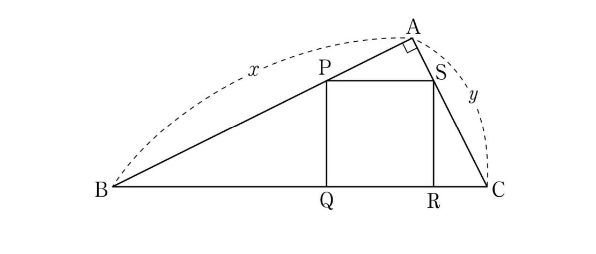

원본 (내부용)그림은 함수 \(f:X\to X\)를 나타낸 것이다. 집합 \(X\)의 왼쪽 타원에 \(1,2,3,4,5\), 오른쪽 타원에 \(1,2,3,4,5\)가 있다. 화살표는 \( 1\mapsto3,\quad 2\mapsto4,\quad 3\mapsto1,\quad 4\mapsto5,\quad 5\mapsto2 \) 를 나타낸다. \(f^{-1}(4)\)의 값은? [3점]
5. 2024년 3월 5번 · 3점 · 고1 범위 · 항등식과 나머지정리·인수분해 · G2M9-01#3
원본 (내부용)\(x\)에 대한 다항식 \(x^3+ax^2+12\)를 \(x-2\)로 나눈 나머지가 \(2a-8\)일 때, 상수 \(a\)의 값은? [3점]
① \(-6\)② \(-8\)③ \(-10\)④ \(-12\)⑤ \(-14\)
원본 정답 ⑤
원본 풀이 (내부용)[출제의도] 나머지정리를 이해하여 미지수의 값을 구한다.
\(
P(x)=x^3+ax^2+12
\)
라 하자. 다항식 \(P(x)\)를 \(x-2\)로 나눈 나머지가 \(2a-8\)이므로
\(
\begin{aligned}
P(2)&=4a+20=2a-8\\
2a&=-28
\end{aligned}
\)
따라서 \(a=-14\).
생성기 숫자판 1/6 · G2M9-01#3$x$에 대한 다항식 $x^{3}+ax^{2}+4$를 $x-2$로 나눈 나머지가 $3a+5$일 때, 상수 $a$의 값으로 옳은 것을 고르세요.
① $-13$② $-11$③ $-9$④ $-7$⑤ $-5$
정답④ $-7$ $P\left(x\right)=x^{3}+ax^{2}+4$라 하면 나머지정리에 의하여 나머지는 $P\left(2\right)$ $P\left(2\right)=2^{3}+a\times 2^{2}+4=4a+12$ $4a+12=3a+5$이므로 $a=-7$ 따라서 $a=-7$
숫자: 원본 12 2 2 8 → 쌍둥이 4 2 3 5 · 같은 수: 2
생성기 숫자판 2/6 · G2M9-01#3$x$에 대한 다항식 $x^{3}+ax^{2}+6$을 $x-1$로 나눈 나머지가 $2a+14$일 때, 상수 $a$의 값으로 옳은 것을 고르세요.
① $-7$② $-5$③ $-3$④ $-1$⑤ $1$
정답① $-7$ $P\left(x\right)=x^{3}+ax^{2}+6$라 하면 나머지정리에 의하여 나머지는 $P\left(1\right)$ $P\left(1\right)=1^{3}+a\times 1^{2}+6=a+7$ $a+7=2a+14$이므로 $-a=7$ 따라서 $a=-7$
숫자: 원본 12 2 2 8 → 쌍둥이 6 1 2 14 · 같은 수: 2
생성기 숫자판 3/6 · G2M9-01#3$x$에 대한 다항식 $x^{3}+ax^{2}+4$를 $x-2$로 나눈 나머지가 $3a+17$일 때, 상수 $a$의 값으로 옳은 것을 고르세요.
① $3$② $5$③ $7$④ $9$⑤ $11$
정답② $5$ $P\left(x\right)=x^{3}+ax^{2}+4$라 하면 나머지정리에 의하여 나머지는 $P\left(2\right)$ $P\left(2\right)=2^{3}+a\times 2^{2}+4=4a+12$ $4a+12=3a+17$이므로 $a=5$ 따라서 $a=5$
숫자: 원본 12 2 2 8 → 쌍둥이 4 2 3 17 · 같은 수: 2
생성기 숫자판 4/6 · G2M9-01#3$x$에 대한 다항식 $x^{3}+ax^{2}+15$를 $x+1$로 나눈 나머지가 $-a+20$일 때, 상수 $a$의 값으로 옳은 것을 고르세요.
① $-3$② $-1$③ $1$④ $3$⑤ $5$
정답④ $3$ $P\left(x\right)=x^{3}+ax^{2}+15$라 하면 나머지정리에 의하여 나머지는 $P\left(-1\right)$ $P\left(-1\right)=\left(-1\right)^{3}+a\times \left(-1\right)^{2}+15=a+14$ $a+14=-a+20$이므로 $2a=6$ 따라서 $a=3$
숫자: 원본 12 2 2 8 → 쌍둥이 15 1 20
생성기 숫자판 5/6 · G2M9-01#3$x$에 대한 다항식 $x^{3}+ax^{2}+3$을 $x-3$으로 나눈 나머지가 $-a+10$일 때, 상수 $a$의 값으로 옳은 것을 고르세요.
① $-10$② $-8$③ $-6$④ $-4$⑤ $-2$
정답⑤ $-2$ $P\left(x\right)=x^{3}+ax^{2}+3$라 하면 나머지정리에 의하여 나머지는 $P\left(3\right)$ $P\left(3\right)=3^{3}+a\times 3^{2}+3=9a+30$ $9a+30=-a+10$이므로 $10a=-20$ 따라서 $a=-2$
숫자: 원본 12 2 2 8 → 쌍둥이 3 3 10
생성기 숫자판 6/6 · G2M9-01#3$x$에 대한 다항식 $x^{3}+ax^{2}+3$을 $x-3$으로 나눈 나머지가 $a-18$일 때, 상수 $a$의 값으로 옳은 것을 고르세요.
① $-14$② $-12$③ $-10$④ $-8$⑤ $-6$
정답⑤ $-6$ $P\left(x\right)=x^{3}+ax^{2}+3$라 하면 나머지정리에 의하여 나머지는 $P\left(3\right)$ $P\left(3\right)=3^{3}+a\times 3^{2}+3=9a+30$ $9a+30=a-18$이므로 $8a=-48$ 따라서 $a=-6$
숫자: 원본 12 2 2 8 → 쌍둥이 3 3 18
6. 2024년 3월 6번 · 3점 · 고1 범위 · 도형의 이동 · G2M9-01#4
원본 (내부용)원 \((x+5)^2+(y+11)^2=25\)를 \(y\)축의 방향으로 1만큼 평행이동한 후, \(x\)축에 대하여 대칭이동한 원이 점 \((0,a)\)를 지날 때, \(a\)의 값은? [3점]
① 8② 9③ 10④ 11⑤ 12
원본 정답 ③
원본 풀이 (내부용)[출제의도] 도형의 평행이동과 대칭이동을 이해하여 점의 좌표를 구한다.
원 \((x+5)^2+(y+11)^2=25\)를 \(y\)축의 방향으로 1만큼 평행이동한 원의 방정식은
\(
(x+5)^2+(y+10)^2=25
\)
원 \((x+5)^2+(y+10)^2=25\)를 \(x\)축에 대하여 대칭이동한 원의 방정식은
\(
(x+5)^2+(y-10)^2=25
\)
원 \((x+5)^2+(y-10)^2=25\)가 점 \((0,a)\)를 지나므로
\(
(0+5)^2+(a-10)^2=25,\qquad (a-10)^2=0
\)
따라서 \(a=10\).
생성기 숫자판 1/6 · G2M9-01#4원 $\left(x+2\right)^{2}+\left(y+6\right)^{2}=4$를 $y$축의 방향으로 $2$만큼 평행이동한 후, $x$축에 대하여 대칭이동한 원이 점 $\left(0,\ a\right)$를 지날 때, $a$의 값으로 옳은 것을 고르세요.
① $1$② $2$③ $3$④ $4$⑤ $5$
정답④ $4$ 원 $\left(x+2\right)^{2}+\left(y+6\right)^{2}=4$의 중심은 $\left(-2,\ -6\right)$, 반지름의 길이는 $2$ $y$축의 방향으로 $2$만큼 평행이동한 원은 $\left(x+2\right)^{2}+\left(y+4\right)^{2}=4$ $x$축에 대하여 대칭이동한 원은 $\left(x+2\right)^{2}+\left(y-4\right)^{2}=4$ 점 $\left(0,\ a\right)$를 지나므로 $4+\left(a-4\right)^{2}=4$, $\left(a-4\right)^{2}=0$ 따라서 $a=4$
숫자: 원본 5 11 25 1 0 → 쌍둥이 2 6 4 2 0 · 같은 수: 0
생성기 숫자판 2/6 · G2M9-01#4원 $\left(x+2\right)^{2}+\left(y+8\right)^{2}=4$를 $y$축의 방향으로 $3$만큼 평행이동한 후, $x$축에 대하여 대칭이동한 원이 점 $\left(0,\ a\right)$를 지날 때, $a$의 값으로 옳은 것을 고르세요.
① $1$② $2$③ $3$④ $4$⑤ $5$
정답⑤ $5$ 원 $\left(x+2\right)^{2}+\left(y+8\right)^{2}=4$의 중심은 $\left(-2,\ -8\right)$, 반지름의 길이는 $2$ $y$축의 방향으로 $3$만큼 평행이동한 원은 $\left(x+2\right)^{2}+\left(y+5\right)^{2}=4$ $x$축에 대하여 대칭이동한 원은 $\left(x+2\right)^{2}+\left(y-5\right)^{2}=4$ 점 $\left(0,\ a\right)$를 지나므로 $4+\left(a-5\right)^{2}=4$, $\left(a-5\right)^{2}=0$ 따라서 $a=5$
숫자: 원본 5 11 25 1 0 → 쌍둥이 2 8 4 3 0 · 같은 수: 0
생성기 숫자판 3/6 · G2M9-01#4원 $\left(x+3\right)^{2}+\left(y+9\right)^{2}=9$를 $y$축의 방향으로 $1$만큼 평행이동한 후, $x$축에 대하여 대칭이동한 원이 점 $\left(0,\ a\right)$를 지날 때, $a$의 값으로 옳은 것을 고르세요.
① $5$② $6$③ $7$④ $8$⑤ $9$
정답④ $8$ 원 $\left(x+3\right)^{2}+\left(y+9\right)^{2}=9$의 중심은 $\left(-3,\ -9\right)$, 반지름의 길이는 $3$ $y$축의 방향으로 $1$만큼 평행이동한 원은 $\left(x+3\right)^{2}+\left(y+8\right)^{2}=9$ $x$축에 대하여 대칭이동한 원은 $\left(x+3\right)^{2}+\left(y-8\right)^{2}=9$ 점 $\left(0,\ a\right)$를 지나므로 $9+\left(a-8\right)^{2}=9$, $\left(a-8\right)^{2}=0$ 따라서 $a=8$
숫자: 원본 5 11 25 1 0 → 쌍둥이 3 9 9 1 0 · 같은 수: 0 1
생성기 숫자판 4/6 · G2M9-01#4원 $\left(x+5\right)^{2}+\left(y+7\right)^{2}=25$를 $y$축의 방향으로 $1$만큼 평행이동한 후, $x$축에 대하여 대칭이동한 원이 점 $\left(0,\ a\right)$를 지날 때, $a$의 값으로 옳은 것을 고르세요.
① $3$② $4$③ $5$④ $6$⑤ $7$
정답④ $6$ 원 $\left(x+5\right)^{2}+\left(y+7\right)^{2}=25$의 중심은 $\left(-5,\ -7\right)$, 반지름의 길이는 $5$ $y$축의 방향으로 $1$만큼 평행이동한 원은 $\left(x+5\right)^{2}+\left(y+6\right)^{2}=25$ $x$축에 대하여 대칭이동한 원은 $\left(x+5\right)^{2}+\left(y-6\right)^{2}=25$ 점 $\left(0,\ a\right)$를 지나므로 $25+\left(a-6\right)^{2}=25$, $\left(a-6\right)^{2}=0$ 따라서 $a=6$
생성기 숫자판 5/6 · G2M9-01#4원 $\left(x+2\right)^{2}+\left(y+6\right)^{2}=4$를 $y$축의 방향으로 $1$만큼 평행이동한 후, $x$축에 대하여 대칭이동한 원이 점 $\left(0,\ a\right)$를 지날 때, $a$의 값으로 옳은 것을 고르세요.
① $5$② $6$③ $7$④ $8$⑤ $9$
정답① $5$ 원 $\left(x+2\right)^{2}+\left(y+6\right)^{2}=4$의 중심은 $\left(-2,\ -6\right)$, 반지름의 길이는 $2$ $y$축의 방향으로 $1$만큼 평행이동한 원은 $\left(x+2\right)^{2}+\left(y+5\right)^{2}=4$ $x$축에 대하여 대칭이동한 원은 $\left(x+2\right)^{2}+\left(y-5\right)^{2}=4$ 점 $\left(0,\ a\right)$를 지나므로 $4+\left(a-5\right)^{2}=4$, $\left(a-5\right)^{2}=0$ 따라서 $a=5$
숫자: 원본 5 11 25 1 0 → 쌍둥이 2 6 4 1 0 · 같은 수: 0 1
생성기 숫자판 6/6 · G2M9-01#4원 $\left(x+6\right)^{2}+\left(y+8\right)^{2}=36$을 $y$축의 방향으로 $2$만큼 평행이동한 후, $x$축에 대하여 대칭이동한 원이 점 $\left(0,\ a\right)$를 지날 때, $a$의 값으로 옳은 것을 고르세요.
① $6$② $7$③ $8$④ $9$⑤ $10$
정답① $6$ 원 $\left(x+6\right)^{2}+\left(y+8\right)^{2}=36$의 중심은 $\left(-6,\ -8\right)$, 반지름의 길이는 $6$ $y$축의 방향으로 $2$만큼 평행이동한 원은 $\left(x+6\right)^{2}+\left(y+6\right)^{2}=36$ $x$축에 대하여 대칭이동한 원은 $\left(x+6\right)^{2}+\left(y-6\right)^{2}=36$ 점 $\left(0,\ a\right)$를 지나므로 $36+\left(a-6\right)^{2}=36$, $\left(a-6\right)^{2}=0$ 따라서 $a=6$
숫자: 원본 5 11 25 1 0 → 쌍둥이 6 8 36 2 0 · 같은 수: 0
7. 2024년 3월 7번 · 3점 · 고1 범위 · 여러 가지 방정식과 부등식 · G2M9-01#5
원본 (내부용)연립부등식 \( \begin{cases} 2x+1<3\\ x^2-2x-15\le 0 \end{cases} \) 을 만족시키는 모든 정수 \(x\)의 개수는? [3점]
① 4② 5③ 6④ 7⑤ 8
원본 정답 ①
원본 풀이 (내부용)[출제의도] 연립부등식을 이해하여 해를 구한다.
\(
2x+1<3\text{에서 }x<1\qquad\cdots\text{①}
\)
\(
\begin{aligned}
x^2-2x-15&\leq0\text{에서}\\
(x-5)(x+3)&\leq0\\
-3&\leq x\leq5\qquad\cdots\text{②}
\end{aligned}
\)
이다. 따라서 연립부등식의 해는 \(-3\leq x<1\)이다.
수직선 그림에는 \(-3\)과 \(5\)를 포함하는 구간, \(1\)을 제외하고 왼쪽으로 이어지는 구간이 표시되어 있다. 이를 만족시키는 정수 \(x\)는 \(x=-3,-2,-1,0\)이고 그 개수는 4이다.
생성기 숫자판 1/6 · G2M9-01#5연립부등식 $\begin{cases}2x-1<-3\\x^{2}-x-30\le 0\end{cases}$을 만족시키는 모든 정수 $x$의 개수로 옳은 것을 고르세요.
① $4$② $5$③ $6$④ $7$⑤ $8$
정답① $4$ $2x-1<-3$에서 $2x<-2$, $x<-1$ $x^{2}-x-30\le 0$에서 $\left(x+5\right)\left(x-6\right)\le 0$, $-5\le x\le 6$ 두 부등식을 동시에 만족시키는 $x$의 값의 범위는 $-5\le x<-1$ 따라서 정수 $x$는 $-5,\ -4,\ -3,\ -2$이고 그 개수는 $4$
생성기 숫자판 4/6 · G2M9-01#5연립부등식 $\begin{cases}2x+2<4\\x^{2}-4x-5\le 0\end{cases}$을 만족시키는 모든 정수 $x$의 개수로 옳은 것을 고르세요.
① $1$② $2$③ $3$④ $4$⑤ $5$
정답② $2$ $2x+2<4$에서 $2x<2$, $x<1$ $x^{2}-4x-5\le 0$에서 $\left(x+1\right)\left(x-5\right)\le 0$, $-1\le x\le 5$ 두 부등식을 동시에 만족시키는 $x$의 값의 범위는 $-1\le x<1$ 따라서 정수 $x$는 $-1,\ 0$이고 그 개수는 $2$
숫자: 원본 2 1 3 2 15 0 → 쌍둥이 2 2 4 4 5 0 · 같은 수: 0 2
생성기 숫자판 5/6 · G2M9-01#5연립부등식 $\begin{cases}2x+4<12\\x^{2}-16\le 0\end{cases}$을 만족시키는 모든 정수 $x$의 개수로 옳은 것을 고르세요.
① $8$② $9$③ $10$④ $11$⑤ $12$
정답① $8$ $2x+4<12$에서 $2x<8$, $x<4$ $x^{2}-16\le 0$에서 $\left(x+4\right)\left(x-4\right)\le 0$, $-4\le x\le 4$ 두 부등식을 동시에 만족시키는 $x$의 값의 범위는 $-4\le x<4$ 따라서 정수 $x$는 $-4,\ -3,\ \cdots,\ 3$이고 그 개수는 $8$
숫자: 원본 2 1 3 2 15 0 → 쌍둥이 2 4 12 16 0 · 같은 수: 0 2
생성기 숫자판 6/6 · G2M9-01#5연립부등식 $\begin{cases}3x+1<-2\\x^{2}-4x-21\le 0\end{cases}$을 만족시키는 모든 정수 $x$의 개수로 옳은 것을 고르세요.
① $2$② $3$③ $4$④ $5$⑤ $6$
정답① $2$ $3x+1<-2$에서 $3x<-3$, $x<-1$ $x^{2}-4x-21\le 0$에서 $\left(x+3\right)\left(x-7\right)\le 0$, $-3\le x\le 7$ 두 부등식을 동시에 만족시키는 $x$의 값의 범위는 $-3\le x<-1$ 따라서 정수 $x$는 $-3,\ -2$이고 그 개수는 $2$
8. 2024년 3월 8번 · 3점 · 고1 범위 · 유리함수와 무리함수 · G2M9-01#6
원본 (내부용)함수 \(y=\dfrac{b}{x-a}\)의 그래프가 점 \((2,4)\)를 지나고 한 점근선의 방정식이 \(x=4\)일 때, \(a-b\)의 값은? (단, \(a,b\)는 상수이다.) [3점]
① 6② 8③ 10④ 12⑤ 14
원본 정답 ④
원본 풀이 (내부용)[출제의도] 유리함수의 그래프를 이해하여 미지수의 값을 구한다.
함수 \(y=\dfrac{b}{x-a}\)의 그래프가 점 \((2,4)\)를 지나므로
\(
4=\frac{b}{2-a}
\)
\(
4a+b=8\qquad\cdots\text{①}
\)
함수 \(y=\dfrac{b}{x-a}\)의 한 점근선의 방정식이 \(x=4\)이므로 \(a=4\)이고, 이를 ①에 대입하면 \(b=-8\).
따라서 \(a-b=4-(-8)=12\).
생성기 숫자판 1/6 · G2M9-01#6함수 $y=\frac{b}{x-a}$의 그래프가 점 $\left(6,\ 3\right)$을 지나고 한 점근선의 방정식이 $x=2$일 때, $a-b$의 값으로 옳은 것을 고르세요. (단, $a$, $b$는 상수입니다.)
① $-16$② $-14$③ $-12$④ $-10$⑤ $-8$
정답④ $-10$ 함수 $y=\frac{b}{x-a}$의 그래프의 점근선은 두 직선 $x=a$, $y=0$이므로 $a=2$ $y=\frac{b}{x-2}$의 그래프가 점 $\left(6,\ 3\right)$을 지나므로 $3=\frac{b}{6-2}$, $b=12$ 따라서 $a-b=2-12=-10$
숫자: 원본 2 4 4 → 쌍둥이 6 3 2 · 같은 수: 2
생성기 숫자판 2/6 · G2M9-01#6함수 $y=\frac{b}{x-a}$의 그래프가 점 $\left(4,\ -2\right)$를 지나고 한 점근선의 방정식이 $x=3$일 때, $a-b$의 값으로 옳은 것을 고르세요. (단, $a$, $b$는 상수입니다.)
① $-3$② $-1$③ $1$④ $3$⑤ $5$
정답⑤ $5$ 함수 $y=\frac{b}{x-a}$의 그래프의 점근선은 두 직선 $x=a$, $y=0$이므로 $a=3$ $y=\frac{b}{x-3}$의 그래프가 점 $\left(4,\ -2\right)$를 지나므로 $-2=\frac{b}{4-3}$, $b=-2$ 따라서 $a-b=3-\left(-2\right)=5$
숫자: 원본 2 4 4 → 쌍둥이 4 2 3 · 같은 수: 2 4
생성기 숫자판 3/6 · G2M9-01#6함수 $y=\frac{b}{x-a}$의 그래프가 점 $\left(1,\ 3\right)$을 지나고 한 점근선의 방정식이 $x=2$일 때, $a-b$의 값으로 옳은 것을 고르세요. (단, $a$, $b$는 상수입니다.)
① $-1$② $1$③ $3$④ $5$⑤ $7$
정답④ $5$ 함수 $y=\frac{b}{x-a}$의 그래프의 점근선은 두 직선 $x=a$, $y=0$이므로 $a=2$ $y=\frac{b}{x-2}$의 그래프가 점 $\left(1,\ 3\right)$을 지나므로 $3=\frac{b}{1-2}$, $b=-3$ 따라서 $a-b=2-\left(-3\right)=5$
숫자: 원본 2 4 4 → 쌍둥이 1 3 2 · 같은 수: 2
생성기 숫자판 4/6 · G2M9-01#6함수 $y=\frac{b}{x-a}$의 그래프가 점 $\left(1,\ -1\right)$을 지나고 한 점근선의 방정식이 $x=4$일 때, $a-b$의 값으로 옳은 것을 고르세요. (단, $a$, $b$는 상수입니다.)
① $-7$② $-5$③ $-3$④ $-1$⑤ $1$
정답⑤ $1$ 함수 $y=\frac{b}{x-a}$의 그래프의 점근선은 두 직선 $x=a$, $y=0$이므로 $a=4$ $y=\frac{b}{x-4}$의 그래프가 점 $\left(1,\ -1\right)$을 지나므로 $-1=\frac{b}{1-4}$, $b=3$ 따라서 $a-b=4-3=1$
숫자: 원본 2 4 4 → 쌍둥이 1 1 4 · 같은 수: 4
생성기 숫자판 5/6 · G2M9-01#6함수 $y=\frac{b}{x-a}$의 그래프가 점 $\left(3,\ -4\right)$를 지나고 한 점근선의 방정식이 $x=2$일 때, $a-b$의 값으로 옳은 것을 고르세요. (단, $a$, $b$는 상수입니다.)
① $2$② $4$③ $6$④ $8$⑤ $10$
정답③ $6$ 함수 $y=\frac{b}{x-a}$의 그래프의 점근선은 두 직선 $x=a$, $y=0$이므로 $a=2$ $y=\frac{b}{x-2}$의 그래프가 점 $\left(3,\ -4\right)$를 지나므로 $-4=\frac{b}{3-2}$, $b=-4$ 따라서 $a-b=2-\left(-4\right)=6$
숫자: 원본 2 4 4 → 쌍둥이 3 4 2 · 같은 수: 2 4
생성기 숫자판 6/6 · G2M9-01#6함수 $y=\frac{b}{x-a}$의 그래프가 점 $\left(5,\ -2\right)$를 지나고 한 점근선의 방정식이 $x=2$일 때, $a-b$의 값으로 옳은 것을 고르세요. (단, $a$, $b$는 상수입니다.)
① $4$② $6$③ $8$④ $10$⑤ $12$
정답③ $8$ 함수 $y=\frac{b}{x-a}$의 그래프의 점근선은 두 직선 $x=a$, $y=0$이므로 $a=2$ $y=\frac{b}{x-2}$의 그래프가 점 $\left(5,\ -2\right)$를 지나므로 $-2=\frac{b}{5-2}$, $b=-6$ 따라서 $a-b=2-\left(-6\right)=8$
숫자: 원본 2 4 4 → 쌍둥이 5 2 2 · 같은 수: 2
9. 2024년 3월 9번 · 3점 · 고1 범위 · 직선의 방정식 · G2M9-01#7
원본 (내부용)두 직선 \(x+3y+2=0,\ 2x-3y-14=0\)의 교점을 지나고 직선 \(2x+y+1=0\)과 평행한 직선의 \(x\)절편은? [3점]
① 1② 2③ 3④ 4⑤ 5
원본 정답 ③
원본 풀이 (내부용)[출제의도] 직선의 방정식을 이해하여 직선의 \(x\)절편을 구한다.
두 방정식 \(x+3y+2=0,\ 2x-3y-14=0\)을 연립하면
\(
x=4,\qquad y=-2
\)
이므로 두 직선의 교점의 좌표는 \((4,-2)\)이다.
직선 \(2x+y+1=0\)의 기울기는 \(-2\)이므로 이 직선과 평행한 직선의 기울기는 \(-2\)이다. 기울기가 \(-2\)이고 점 \((4,-2)\)를 지나는 직선의 방정식은
\(
y-(-2)=-2(x-4),\quad\text{즉 }y=-2x+6
\)
이다. \(y=0\)을 대입하면 \(0=-2x+6,\ x=3\)이므로 \(x\)절편은 3이다.
생성기 숫자판 1/6 · G2M9-01#7두 직선 $2x-3y-17=0$, $2x-2y-14=0$의 교점을 지나고 직선 $x+y+1=0$과 평행한 직선의 $x$절편으로 옳은 것을 고르세요.
① $0$② $1$③ $2$④ $3$⑤ $4$
정답② $1$ 두 직선 $2x-3y-17=0$, $2x-2y-14=0$의 교점의 좌표를 구하면 $\left(4,\ -3\right)$ 직선 $x+y+1=0$과 평행한 직선의 방정식은 $x+y+k=0$ 꼴 점 $\left(4,\ -3\right)$을 지나므로 $1\times 4+1\times \left(-3\right)+k=0$, $k=-1$ $y=0$을 대입하면 $x-1=0$이므로 $x$절편은 $1$
원본 (내부용)전체집합 \(U=\{1,2,4,8,16,32\}\)의 두 부분집합 \(A,B\)가 다음 조건을 만족시킨다. \( \begin{aligned} \text{(가)}\quad&A\cap B=\{2,8\}\\ \text{(나)}\quad&A^C\cup B=\{1,2,8,16\} \end{aligned} \) 집합 \(A\)의 모든 원소의 합은? [3점]
① 26② 31③ 36④ 41⑤ 46
원본 정답 ⑤
원본 풀이 (내부용)[출제의도] 집합의 연산 법칙을 이해하여 조건을 만족시키는 집합의 모든 원소의 합을 구한다.
조건 (나)에서 \(A^c\cup B=\{1,2,8,16\}\)이고 드모르간의 법칙에 의하여
\(
A\cap B^c=(A^c\cup B)^c=\{4,32\}
\)
이다.
\(
\begin{aligned}
A&=(A\cap B)\cup(A\cap B^c)\\
&=\{2,8\}\cup\{4,32\}\\
&=\{2,4,8,32\}
\end{aligned}
\)
따라서 집합 \(A\)의 모든 원소의 합은 \(2+4+8+32=46\)이다.
생성기 숫자판 1/6 · G2M9-02#0전체집합 $U=\left\{1,\ 2,\ 3,\ 4,\ 5,\ 6,\ 7\right\}$의 두 부분집합 $A$, $B$가 다음 조건을 만족시킵니다.
(가) $A\cap B=\left\{4,\ 5\right\}$
(나) $A^{C}\cup B=\left\{2,\ 4,\ 5,\ 6,\ 7\right\}$
집합 $A$의 모든 원소의 합으로 옳은 것을 고르세요.
① $8$② $13$③ $18$④ $23$⑤ $28$
정답② $13$ $A^{C}\cup B=\left(A\cap B^{C}\right)^{C}=\left(A-B\right)^{C}$이므로 $A-B=\left\{1,\ 3\right\}$ $A=\left(A-B\right)\cup\left(A\cap B\right)=\left\{1,\ 3,\ 4,\ 5\right\}$ 따라서 집합 $A$의 모든 원소의 합은 $1+3+4+5=13$
생성기 숫자판 2/6 · G2M9-02#0전체집합 $U=\left\{1,\ 2,\ 3,\ 4,\ 5,\ 6,\ 7\right\}$의 두 부분집합 $A$, $B$가 다음 조건을 만족시킵니다.
(가) $A\cap B=\left\{3,\ 5\right\}$
(나) $A^{C}\cup B=\left\{2,\ 3,\ 4,\ 5,\ 7\right\}$
집합 $A$의 모든 원소의 합으로 옳은 것을 고르세요.
① $5$② $10$③ $15$④ $20$⑤ $25$
정답③ $15$ $A^{C}\cup B=\left(A\cap B^{C}\right)^{C}=\left(A-B\right)^{C}$이므로 $A-B=\left\{1,\ 6\right\}$ $A=\left(A-B\right)\cup\left(A\cap B\right)=\left\{1,\ 3,\ 5,\ 6\right\}$ 따라서 집합 $A$의 모든 원소의 합은 $1+3+5+6=15$
생성기 숫자판 3/6 · G2M9-02#0전체집합 $U=\left\{3,\ 6,\ 9,\ 12,\ 15,\ 18\right\}$의 두 부분집합 $A$, $B$가 다음 조건을 만족시킵니다.
(가) $A\cap B=\left\{3,\ 18\right\}$
(나) $A^{C}\cup B=\left\{3,\ 9,\ 12,\ 18\right\}$
집합 $A$의 모든 원소의 합으로 옳은 것을 고르세요.
① $42$② $47$③ $52$④ $57$⑤ $62$
정답① $42$ $A^{C}\cup B=\left(A\cap B^{C}\right)^{C}=\left(A-B\right)^{C}$이므로 $A-B=\left\{6,\ 15\right\}$ $A=\left(A-B\right)\cup\left(A\cap B\right)=\left\{3,\ 6,\ 15,\ 18\right\}$ 따라서 집합 $A$의 모든 원소의 합은 $3+6+15+18=42$
생성기 숫자판 4/6 · G2M9-02#0전체집합 $U=\left\{1,\ 2,\ 3,\ 4,\ 5,\ 6,\ 7\right\}$의 두 부분집합 $A$, $B$가 다음 조건을 만족시킵니다.
(가) $A\cap B=\left\{3,\ 6\right\}$
(나) $A^{C}\cup B=\left\{1,\ 2,\ 3,\ 4,\ 6\right\}$
집합 $A$의 모든 원소의 합으로 옳은 것을 고르세요.
① $16$② $21$③ $26$④ $31$⑤ $36$
정답② $21$ $A^{C}\cup B=\left(A\cap B^{C}\right)^{C}=\left(A-B\right)^{C}$이므로 $A-B=\left\{5,\ 7\right\}$ $A=\left(A-B\right)\cup\left(A\cap B\right)=\left\{3,\ 5,\ 6,\ 7\right\}$ 따라서 집합 $A$의 모든 원소의 합은 $3+5+6+7=21$
생성기 숫자판 5/6 · G2M9-02#0전체집합 $U=\left\{1,\ 2,\ 3,\ 4,\ 5,\ 6,\ 7\right\}$의 두 부분집합 $A$, $B$가 다음 조건을 만족시킵니다.
(가) $A\cap B=\left\{5,\ 6\right\}$
(나) $A^{C}\cup B=\left\{1,\ 2,\ 3,\ 5,\ 6\right\}$
집합 $A$의 모든 원소의 합으로 옳은 것을 고르세요.
① $12$② $17$③ $22$④ $27$⑤ $32$
정답③ $22$ $A^{C}\cup B=\left(A\cap B^{C}\right)^{C}=\left(A-B\right)^{C}$이므로 $A-B=\left\{4,\ 7\right\}$ $A=\left(A-B\right)\cup\left(A\cap B\right)=\left\{4,\ 5,\ 6,\ 7\right\}$ 따라서 집합 $A$의 모든 원소의 합은 $4+5+6+7=22$
생성기 숫자판 6/6 · G2M9-02#0전체집합 $U=\left\{1,\ 3,\ 9,\ 27,\ 81\right\}$의 두 부분집합 $A$, $B$가 다음 조건을 만족시킵니다.
(가) $A\cap B=\left\{1,\ 3\right\}$
(나) $A^{C}\cup B=\left\{1,\ 3,\ 27\right\}$
집합 $A$의 모든 원소의 합으로 옳은 것을 고르세요.
① $94$② $99$③ $104$④ $109$⑤ $114$
정답① $94$ $A^{C}\cup B=\left(A\cap B^{C}\right)^{C}=\left(A-B\right)^{C}$이므로 $A-B=\left\{9,\ 81\right\}$ $A=\left(A-B\right)\cup\left(A\cap B\right)=\left\{1,\ 3,\ 9,\ 81\right\}$ 따라서 집합 $A$의 모든 원소의 합은 $1+3+9+81=94$
원본 (내부용)실수 전체의 집합에서 정의된 함수 \( f(x)= \begin{cases} (a+7)x-1 &(x<1)\\ (-a+5)x+2a+1 &(x\ge 1) \end{cases} \) 의 역함수가 존재하도록 하는 모든 정수 \(a\)의 개수는? [3점]
① 10② 11③ 12④ 13⑤ 14
원본 정답 ②
원본 풀이 (내부용)[출제의도] 역함수를 이해하여 미지수의 값을 구한다.
함수 \(f(x)\)의 역함수가 존재하려면 \(f(x)\)는 일대일대응이어야 한다.
\(a+7=0\) 또는 \(-a+5=0\)일 때 \(f(x)\)는 일대일대응이 아니다. 그러므로 \(a\ne-7,\ a\ne5\)이다.
함수 \(f(x)\)가 일대일대응이기 위해서는 직선 \(y=(a+7)x-1\)의 기울기 \(a+7\)과 직선 \(y=(-a+5)x+2\)의 기울기 \(-a+5\)의 부호가 같아야 한다.
그러므로
\(
(a+7)(-a+5)>0,\qquad (a+7)(a-5)<0
\)
\(
-7<a<5
\)
따라서 이를 만족시키는 정수 \(a\)는 \(-6,-5,\ldots,4\)이고 그 개수는 11이다.
생성기 숫자판 1/6 · G2M9-02#1실수 전체의 집합에서 정의된 함수 $f\left(x\right)=\begin{cases}\left(a+3\right)x-3 & \left(x<1\right)\\\left(-a+7\right)x+2a-7 & \left(x\ge 1\right)\end{cases}$의 역함수가 존재하도록 하는 모든 정수 $a$의 개수로 옳은 것을 고르세요.
① $5$② $6$③ $7$④ $8$⑤ $9$
정답⑤ $9$ $x=1$에서 $\left(a+3\right)\times 1-3=a+0$, $\left(-a+7\right)\times 1+2a-7=a+0$이므로 함수 $f\left(x\right)$는 실수 전체의 집합에서 연속입니다. 함수 $f\left(x\right)$의 역함수가 존재하려면 $f\left(x\right)$가 일대일대응이어야 하므로 두 직선의 기울기의 부호가 같아야 합니다. $\left(a+3\right)\left(-a+7\right)>0$에서 $\left(a+3\right)\left(a-7\right)<0$, $-3<a<7$ 따라서 정수 $a$는 $-2$, $-1$, $\cdots$, $6$이고 그 개수는 $9$
생성기 숫자판 2/6 · G2M9-02#1실수 전체의 집합에서 정의된 함수 $f\left(x\right)=\begin{cases}\left(a+2\right)x-4 & \left(x<1\right)\\\left(-a+3\right)x+2a-5 & \left(x\ge 1\right)\end{cases}$의 역함수가 존재하도록 하는 모든 정수 $a$의 개수로 옳은 것을 고르세요.
① $2$② $3$③ $4$④ $5$⑤ $6$
정답③ $4$ $x=1$에서 $\left(a+2\right)\times 1-4=a-2$, $\left(-a+3\right)\times 1+2a-5=a-2$이므로 함수 $f\left(x\right)$는 실수 전체의 집합에서 연속입니다. 함수 $f\left(x\right)$의 역함수가 존재하려면 $f\left(x\right)$가 일대일대응이어야 하므로 두 직선의 기울기의 부호가 같아야 합니다. $\left(a+2\right)\left(-a+3\right)>0$에서 $\left(a+2\right)\left(a-3\right)<0$, $-2<a<3$ 따라서 정수 $a$는 $-1$, $0$, $\cdots$, $2$이고 그 개수는 $4$
생성기 숫자판 3/6 · G2M9-02#1실수 전체의 집합에서 정의된 함수 $f\left(x\right)=\begin{cases}\left(a+5\right)x+3 & \left(x<1\right)\\\left(-a+7\right)x+2a+1 & \left(x\ge 1\right)\end{cases}$의 역함수가 존재하도록 하는 모든 정수 $a$의 개수로 옳은 것을 고르세요.
① $7$② $8$③ $9$④ $10$⑤ $11$
정답⑤ $11$ $x=1$에서 $\left(a+5\right)\times 1+3=a+8$, $\left(-a+7\right)\times 1+2a+1=a+8$이므로 함수 $f\left(x\right)$는 실수 전체의 집합에서 연속입니다. 함수 $f\left(x\right)$의 역함수가 존재하려면 $f\left(x\right)$가 일대일대응이어야 하므로 두 직선의 기울기의 부호가 같아야 합니다. $\left(a+5\right)\left(-a+7\right)>0$에서 $\left(a+5\right)\left(a-7\right)<0$, $-5<a<7$ 따라서 정수 $a$는 $-4$, $-3$, $\cdots$, $6$이고 그 개수는 $11$
생성기 숫자판 4/6 · G2M9-02#1실수 전체의 집합에서 정의된 함수 $f\left(x\right)=\begin{cases}\left(a+4\right)x-3 & \left(x<1\right)\\\left(-a+7\right)x+2a-6 & \left(x\ge 1\right)\end{cases}$의 역함수가 존재하도록 하는 모든 정수 $a$의 개수로 옳은 것을 고르세요.
① $9$② $10$③ $11$④ $12$⑤ $13$
정답② $10$ $x=1$에서 $\left(a+4\right)\times 1-3=a+1$, $\left(-a+7\right)\times 1+2a-6=a+1$이므로 함수 $f\left(x\right)$는 실수 전체의 집합에서 연속입니다. 함수 $f\left(x\right)$의 역함수가 존재하려면 $f\left(x\right)$가 일대일대응이어야 하므로 두 직선의 기울기의 부호가 같아야 합니다. $\left(a+4\right)\left(-a+7\right)>0$에서 $\left(a+4\right)\left(a-7\right)<0$, $-4<a<7$ 따라서 정수 $a$는 $-3$, $-2$, $\cdots$, $6$이고 그 개수는 $10$
생성기 숫자판 5/6 · G2M9-02#1실수 전체의 집합에서 정의된 함수 $f\left(x\right)=\begin{cases}\left(a+8\right)x+2 & \left(x<1\right)\\\left(-a+7\right)x+2a+3 & \left(x\ge 1\right)\end{cases}$의 역함수가 존재하도록 하는 모든 정수 $a$의 개수로 옳은 것을 고르세요.
① $14$② $15$③ $16$④ $17$⑤ $18$
정답① $14$ $x=1$에서 $\left(a+8\right)\times 1+2=a+10$, $\left(-a+7\right)\times 1+2a+3=a+10$이므로 함수 $f\left(x\right)$는 실수 전체의 집합에서 연속입니다. 함수 $f\left(x\right)$의 역함수가 존재하려면 $f\left(x\right)$가 일대일대응이어야 하므로 두 직선의 기울기의 부호가 같아야 합니다. $\left(a+8\right)\left(-a+7\right)>0$에서 $\left(a+8\right)\left(a-7\right)<0$, $-8<a<7$ 따라서 정수 $a$는 $-7$, $-6$, $\cdots$, $6$이고 그 개수는 $14$
생성기 숫자판 6/6 · G2M9-02#1실수 전체의 집합에서 정의된 함수 $f\left(x\right)=\begin{cases}\left(a+6\right)x-2 & \left(x<1\right)\\\left(-a+4\right)x+2a & \left(x\ge 1\right)\end{cases}$의 역함수가 존재하도록 하는 모든 정수 $a$의 개수로 옳은 것을 고르세요.
① $8$② $9$③ $10$④ $11$⑤ $12$
정답② $9$ $x=1$에서 $\left(a+6\right)\times 1-2=a+4$, $\left(-a+4\right)\times 1+2a=a+4$이므로 함수 $f\left(x\right)$는 실수 전체의 집합에서 연속입니다. 함수 $f\left(x\right)$의 역함수가 존재하려면 $f\left(x\right)$가 일대일대응이어야 하므로 두 직선의 기울기의 부호가 같아야 합니다. $\left(a+6\right)\left(-a+4\right)>0$에서 $\left(a+6\right)\left(a-4\right)<0$, $-6<a<4$ 따라서 정수 $a$는 $-5$, $-4$, $\cdots$, $3$이고 그 개수는 $9$
13. 2024년 3월 13번 · 3점 · 고1 범위 · 원의 방정식 · G2M9-02#2
원본 (내부용)좌표평면에서 원 \((x-2)^2+(y-3)^2=r^2\)과 직선 \(y=x+5\)가 서로 다른 두 점 \(A,B\)에서 만나고, \(\overline{AB}=2\sqrt2\)이다. 양수 \(r\)의 값은? [3점]
① 3② \(\sqrt{10}\)③ \(\sqrt{11}\)④ \(2\sqrt3\)⑤ \(\sqrt{13}\)
원본 정답 ②
원본 풀이 (내부용)[출제의도] 원과 직선의 위치 관계를 이해하여 미지수의 값을 구한다.
원 \((x-2)^2+(y-3)^2=r^2\)의 중심을 \(C\)라 하자. 원의 중심 \(C\)에서 선분 \(AB\)에 내린 수선의 발을 \(H\)라 하면 \(AH=BH\)이고 \(\overline{AB}=2\sqrt2\)이므로 \(AH=\sqrt2\)이다.
점 \(C(2,3)\)과 직선 \(x-y+5=0\) 사이의 거리를 구하면
\(
\overline{CH}
=\frac{|2-3+5|}{\sqrt{1^2+(-1)^2}}
=\frac{4}{\sqrt2}
=2\sqrt2
\)
직각삼각형 \(ACH\)에서
\(
\begin{aligned}
r^2&=\overline{AH}^2+\overline{CH}^2\\
&=(\sqrt2)^2+(2\sqrt2)^2\\
&=10
\end{aligned}
\)
따라서 \(r=\sqrt{10}\).
생성기 숫자판 1/6 · G2M9-02#2좌표평면에서 원 $\left(x+2\right)^{2}+\left(y+2\right)^{2}=r^{2}$과 직선 $y=x-6$이 서로 다른 두 점 $\mathrm{A}$, $\mathrm{B}$에서 만나고, $\overline{\mathrm{AB}}=2$입니다. 양수 $r$의 값으로 옳은 것을 고르세요.
① $4$② $\sqrt{17}$③ $3\sqrt{2}$④ $\sqrt{19}$⑤ $2\sqrt{5}$
정답④ $\sqrt{19}$ 원의 중심 $\left(-2,\ -2\right)$와 직선 $x-y-6=0$ 사이의 거리는 $\frac{\left|-2-\left(-2\right)-6\right|}{\sqrt{2}}=3\sqrt{2}$ 중심에서 현 $\mathrm{AB}$에 내린 수선의 발은 현을 이등분하므로 $\frac{1}{2}\overline{\mathrm{AB}}=1$ $r^{2}=\left(3\sqrt{2}\right)^{2}+\left(1\right)^{2}=18+1=19$ 따라서 $r=\sqrt{19}$
숫자: 원본 2 3 5 2 2 → 쌍둥이 2 2 6 2 · 같은 수: 2
생성기 숫자판 2/6 · G2M9-02#2좌표평면에서 원 $\left(x+2\right)^{2}+\left(y-1\right)^{2}=r^{2}$과 직선 $y=x-1$이 서로 다른 두 점 $\mathrm{A}$, $\mathrm{B}$에서 만나고, $\overline{\mathrm{AB}}=4$입니다. 양수 $r$의 값으로 옳은 것을 고르세요.
① $3$② $\sqrt{10}$③ $\sqrt{11}$④ $2\sqrt{3}$⑤ $\sqrt{13}$
정답④ $2\sqrt{3}$ 원의 중심 $\left(-2,\ 1\right)$과 직선 $x-y-1=0$ 사이의 거리는 $\frac{\left|-2-1-1\right|}{\sqrt{2}}=2\sqrt{2}$ 중심에서 현 $\mathrm{AB}$에 내린 수선의 발은 현을 이등분하므로 $\frac{1}{2}\overline{\mathrm{AB}}=2$ $r^{2}=\left(2\sqrt{2}\right)^{2}+\left(2\right)^{2}=8+4=12$ 따라서 $r=2\sqrt{3}$
숫자: 원본 2 3 5 2 2 → 쌍둥이 2 1 1 4 · 같은 수: 2
생성기 숫자판 3/6 · G2M9-02#2좌표평면에서 원 $\left(x+2\right)^{2}+\left(y-4\right)^{2}=r^{2}$과 직선 $y=x+4$가 서로 다른 두 점 $\mathrm{A}$, $\mathrm{B}$에서 만나고, $\overline{\mathrm{AB}}=4$입니다. 양수 $r$의 값으로 옳은 것을 고르세요.
① $\sqrt{3}$② $2$③ $\sqrt{5}$④ $\sqrt{6}$⑤ $\sqrt{7}$
정답④ $\sqrt{6}$ 원의 중심 $\left(-2,\ 4\right)$와 직선 $x-y+4=0$ 사이의 거리는 $\frac{\left|-2-4+4\right|}{\sqrt{2}}=\sqrt{2}$ 중심에서 현 $\mathrm{AB}$에 내린 수선의 발은 현을 이등분하므로 $\frac{1}{2}\overline{\mathrm{AB}}=2$ $r^{2}=\left(\sqrt{2}\right)^{2}+\left(2\right)^{2}=2+4=6$ 따라서 $r=\sqrt{6}$
숫자: 원본 2 3 5 2 2 → 쌍둥이 2 4 4 4 · 같은 수: 2
생성기 숫자판 4/6 · G2M9-02#2좌표평면에서 원 $\left(x-4\right)^{2}+y^{2}=r^{2}$과 직선 $y=x+4$가 서로 다른 두 점 $\mathrm{A}$, $\mathrm{B}$에서 만나고, $\overline{\mathrm{AB}}=2\sqrt{2}$입니다. 양수 $r$의 값으로 옳은 것을 고르세요.
① $\sqrt{31}$② $4\sqrt{2}$③ $\sqrt{33}$④ $\sqrt{34}$⑤ $\sqrt{35}$
정답④ $\sqrt{34}$ 원의 중심 $\left(4,\ 0\right)$과 직선 $x-y+4=0$ 사이의 거리는 $\frac{\left|4-0+4\right|}{\sqrt{2}}=4\sqrt{2}$ 중심에서 현 $\mathrm{AB}$에 내린 수선의 발은 현을 이등분하므로 $\frac{1}{2}\overline{\mathrm{AB}}=\sqrt{2}$ $r^{2}=\left(4\sqrt{2}\right)^{2}+\left(\sqrt{2}\right)^{2}=32+2=34$ 따라서 $r=\sqrt{34}$
숫자: 원본 2 3 5 2 2 → 쌍둥이 4 4 2 2 · 같은 수: 2
생성기 숫자판 5/6 · G2M9-02#2좌표평면에서 원 $\left(x-4\right)^{2}+\left(y+2\right)^{2}=r^{2}$과 직선 $y=x+6$이 서로 다른 두 점 $\mathrm{A}$, $\mathrm{B}$에서 만나고, $\overline{\mathrm{AB}}=4$입니다. 양수 $r$의 값으로 옳은 것을 고르세요.
① $\sqrt{73}$② $\sqrt{74}$③ $5\sqrt{3}$④ $2\sqrt{19}$⑤ $\sqrt{77}$
정답④ $2\sqrt{19}$ 원의 중심 $\left(4,\ -2\right)$와 직선 $x-y+6=0$ 사이의 거리는 $\frac{\left|4-\left(-2\right)+6\right|}{\sqrt{2}}=6\sqrt{2}$ 중심에서 현 $\mathrm{AB}$에 내린 수선의 발은 현을 이등분하므로 $\frac{1}{2}\overline{\mathrm{AB}}=2$ $r^{2}=\left(6\sqrt{2}\right)^{2}+\left(2\right)^{2}=72+4=76$ 따라서 $r=2\sqrt{19}$
숫자: 원본 2 3 5 2 2 → 쌍둥이 4 2 6 4 · 같은 수: 2
생성기 숫자판 6/6 · G2M9-02#2좌표평면에서 원 $\left(x-1\right)^{2}+\left(y-4\right)^{2}=r^{2}$과 직선 $y=x-3$이 서로 다른 두 점 $\mathrm{A}$, $\mathrm{B}$에서 만나고, $\overline{\mathrm{AB}}=4$입니다. 양수 $r$의 값으로 옳은 것을 고르세요.
① $\sqrt{19}$② $2\sqrt{5}$③ $\sqrt{21}$④ $\sqrt{22}$⑤ $\sqrt{23}$
정답④ $\sqrt{22}$ 원의 중심 $\left(1,\ 4\right)$와 직선 $x-y-3=0$ 사이의 거리는 $\frac{\left|1-4-3\right|}{\sqrt{2}}=3\sqrt{2}$ 중심에서 현 $\mathrm{AB}$에 내린 수선의 발은 현을 이등분하므로 $\frac{1}{2}\overline{\mathrm{AB}}=2$ $r^{2}=\left(3\sqrt{2}\right)^{2}+\left(2\right)^{2}=18+4=22$ 따라서 $r=\sqrt{22}$
숫자: 원본 2 3 5 2 2 → 쌍둥이 1 4 3 4 · 같은 수: 3
14. 2024년 3월 14번 · 4점 · 고1 범위 · 유리함수와 무리함수 · 4점 쌍둥이
원본 (내부용)그림과 같이 \(k>1\)인 상수 \(k\)에 대하여 점 \(A(k,0)\)을 지나고 \(y\)축에 평행한 직선이 두 곡선 \(y=\sqrt{x},\ y=\sqrt{kx}\)와 만나는 점을 각각 \(B,C\)라 하자. 삼각형 \(OBC\)의 넓이가 삼각형 \(OAB\)의 넓이의 2배일 때, 삼각형 \(OBC\)의 넓이는? (단, \(O\)는 원점이다.) [4점] 그림: \(A\)는 \(x\)축 위의 \((k,0)\)에 있고, \(A\)를 지나는 수직선이 아래 곡선 \(y=\sqrt{x}\)와 \(B\)에서, 위 곡선 \(y=\sqrt{kx}\)와 \(C\)에서 만난다. \(O\)는 원점이며 \(O,A,B,C\)가 표시되어 있다.
① 15② 18③ 21④ 24⑤ 27
원본 정답 ⑤
원본 풀이 (내부용)[출제의도] 무리함수의 그래프를 이해하여 삼각형의 넓이를 구한다.
점 \(B(k,\sqrt{k})\), 점 \(C(k,k)\)이고 삼각형 \(OBC\)의 넓이가 삼각형 \(OAB\)의 넓이의 2배이므로
\(
\frac12\times\overline{OA}\times\overline{BC}
=2\times\frac12\times\overline{OA}\times\overline{AB}
\)
\(
\overline{BC}=2\overline{AB}
\)
\(
\overline{AC}=\overline{AB}+\overline{BC}=3\overline{AB}
\)
\(
\overline{AB}=\sqrt{k},\qquad \overline{AC}=k\text{에서}
\)
\(
k=3\sqrt{k},\qquad k^2-9k=0
\)
\(k>1\)이므로 \(k=9\).
따라서 삼각형 \(OBC\)의 넓이는
\(
\frac12\times\overline{OA}\times\overline{BC}
=\frac12\times9\times6=27
\)
쌍둥이 1/5 · 4점 쌍둥이그림과 같이 $k>1$인 상수 $k$에 대하여 점 $A\left(k,0\right)$을 지나고 $y$축에 평행한 직선이 두 곡선 $y=\sqrt{x}$, $y=\sqrt{kx}$와 만나는 점을 각각 $B$, $C$라 합니다. 삼각형 $OBC$의 넓이가 삼각형 $OAB$의 넓이의 $5$배일 때, 삼각형 $OBC$의 넓이로 옳은 것을 고르세요. (단, $O$는 원점입니다.)
① $516$② $522$③ $528$④ $534$⑤ $540$
정답⑤ $540$ $B\left(k,\sqrt{k}\right)$, $C\left(k,\sqrt{k\times k}\right)=\left(k,k\right)$이므로 $\overline{AB}=\sqrt{k}$, $\overline{BC}=k-\sqrt{k}$ 삼각형 $OAB$의 넓이는 $\frac{1}{2}k\sqrt{k}$, 삼각형 $OBC$의 넓이는 $\frac{1}{2}k\left(k-\sqrt{k}\right)$ $\frac{1}{2}k\left(k-\sqrt{k}\right)=5\times\frac{1}{2}k\sqrt{k}$에서 $k=6\sqrt{k}$, $\sqrt{k}=6$이므로 $k=36$ 따라서 삼각형 $OBC$의 넓이는 $\frac{1}{2}\times36\times\left(36-6\right)=540$
숫자: 원본 1 0 2 0 → 쌍둥이 1 0 5 · 같은 수: 0 1
쌍둥이 2/5 · 4점 쌍둥이그림과 같이 $k>1$인 상수 $k$에 대하여 점 $A\left(k,0\right)$을 지나고 $y$축에 평행한 직선이 두 곡선 $y=\sqrt{x}$, $y=\sqrt{kx}$와 만나는 점을 각각 $B$, $C$라 합니다. 삼각형 $OBC$의 넓이가 삼각형 $OAB$의 넓이의 $3$배일 때, 삼각형 $OBC$의 넓이로 옳은 것을 고르세요. (단, $O$는 원점입니다.)
① $92$② $96$③ $100$④ $104$⑤ $108$
정답② $96$ $B\left(k,\sqrt{k}\right)$, $C\left(k,\sqrt{k\times k}\right)=\left(k,k\right)$이므로 $\overline{AB}=\sqrt{k}$, $\overline{BC}=k-\sqrt{k}$ 삼각형 $OAB$의 넓이는 $\frac{1}{2}k\sqrt{k}$, 삼각형 $OBC$의 넓이는 $\frac{1}{2}k\left(k-\sqrt{k}\right)$ $\frac{1}{2}k\left(k-\sqrt{k}\right)=3\times\frac{1}{2}k\sqrt{k}$에서 $k=4\sqrt{k}$, $\sqrt{k}=4$이므로 $k=16$ 따라서 삼각형 $OBC$의 넓이는 $\frac{1}{2}\times16\times\left(16-4\right)=96$
숫자: 원본 1 0 2 0 → 쌍둥이 1 0 3 · 같은 수: 0 1
쌍둥이 3/5 · 4점 쌍둥이그림과 같이 $k>1$인 상수 $k$에 대하여 점 $A\left(k,0\right)$을 지나고 $y$축에 평행한 직선이 두 곡선 $y=\sqrt{x}$, $y=\sqrt{kx}$와 만나는 점을 각각 $B$, $C$라 합니다. 삼각형 $OBC$의 넓이가 삼각형 $OAB$의 넓이의 $4$배일 때, 삼각형 $OBC$의 넓이로 옳은 것을 고르세요. (단, $O$는 원점입니다.)
① $245$② $250$③ $255$④ $260$⑤ $265$
정답② $250$ $B\left(k,\sqrt{k}\right)$, $C\left(k,\sqrt{k\times k}\right)=\left(k,k\right)$이므로 $\overline{AB}=\sqrt{k}$, $\overline{BC}=k-\sqrt{k}$ 삼각형 $OAB$의 넓이는 $\frac{1}{2}k\sqrt{k}$, 삼각형 $OBC$의 넓이는 $\frac{1}{2}k\left(k-\sqrt{k}\right)$ $\frac{1}{2}k\left(k-\sqrt{k}\right)=4\times\frac{1}{2}k\sqrt{k}$에서 $k=5\sqrt{k}$, $\sqrt{k}=5$이므로 $k=25$ 따라서 삼각형 $OBC$의 넓이는 $\frac{1}{2}\times25\times\left(25-5\right)=250$
숫자: 원본 1 0 2 0 → 쌍둥이 1 0 4 · 같은 수: 0 1
쌍둥이 4/5 · 4점 쌍둥이그림과 같이 $k>1$인 상수 $k$에 대하여 점 $A\left(k,0\right)$을 지나고 $y$축에 평행한 직선이 두 곡선 $y=\sqrt{x}$, $y=\sqrt{kx}$와 만나는 점을 각각 $B$, $C$라 합니다. 삼각형 $OBC$의 넓이가 삼각형 $OAB$의 넓이의 $6$배일 때, 삼각형 $OBC$의 넓이로 옳은 것을 고르세요. (단, $O$는 원점입니다.)
① $1001$② $1008$③ $1015$④ $1022$⑤ $1029$
정답⑤ $1029$ $B\left(k,\sqrt{k}\right)$, $C\left(k,\sqrt{k\times k}\right)=\left(k,k\right)$이므로 $\overline{AB}=\sqrt{k}$, $\overline{BC}=k-\sqrt{k}$ 삼각형 $OAB$의 넓이는 $\frac{1}{2}k\sqrt{k}$, 삼각형 $OBC$의 넓이는 $\frac{1}{2}k\left(k-\sqrt{k}\right)$ $\frac{1}{2}k\left(k-\sqrt{k}\right)=6\times\frac{1}{2}k\sqrt{k}$에서 $k=7\sqrt{k}$, $\sqrt{k}=7$이므로 $k=49$ 따라서 삼각형 $OBC$의 넓이는 $\frac{1}{2}\times49\times\left(49-7\right)=1029$
숫자: 원본 1 0 2 0 → 쌍둥이 1 0 6 · 같은 수: 0 1
쌍둥이 5/5 · 4점 쌍둥이그림과 같이 $k>1$인 상수 $k$에 대하여 점 $A\left(k,0\right)$을 지나고 $y$축에 평행한 직선이 두 곡선 $y=\sqrt{x}$, $y=\sqrt{kx}$와 만나는 점을 각각 $B$, $C$라 합니다. 삼각형 $OBC$의 넓이가 삼각형 $OAB$의 넓이의 $7$배일 때, 삼각형 $OBC$의 넓이로 옳은 것을 고르세요. (단, $O$는 원점입니다.)
① $1776$② $1784$③ $1792$④ $1800$⑤ $1808$
정답③ $1792$ $B\left(k,\sqrt{k}\right)$, $C\left(k,\sqrt{k\times k}\right)=\left(k,k\right)$이므로 $\overline{AB}=\sqrt{k}$, $\overline{BC}=k-\sqrt{k}$ 삼각형 $OAB$의 넓이는 $\frac{1}{2}k\sqrt{k}$, 삼각형 $OBC$의 넓이는 $\frac{1}{2}k\left(k-\sqrt{k}\right)$ $\frac{1}{2}k\left(k-\sqrt{k}\right)=7\times\frac{1}{2}k\sqrt{k}$에서 $k=8\sqrt{k}$, $\sqrt{k}=8$이므로 $k=64$ 따라서 삼각형 $OBC$의 넓이는 $\frac{1}{2}\times64\times\left(64-8\right)=1792$
숫자: 원본 1 0 2 0 → 쌍둥이 1 0 7 · 같은 수: 0 1
15. 2024년 3월 15번 · 4점 · 고1 범위 · 복소수와 이차방정식 · 4점 쌍둥이
원본 (내부용)다음 조건을 만족시키는 복소수 \(z\)가 존재하도록 하는 모든 실수 \(k\)의 값의 곱은? (단, \(\overline z\)는 \(z\)의 켤레복소수이다.) [4점] \( \begin{aligned} \text{(가)}\quad&\overline z=-z\\ \text{(나)}\quad&z^2+(k^2-3k-4)z+(k^2+2k-8)=0 \end{aligned} \)
① \(-32\)② \(-16\)③ \(-8\)④ \(-4\)⑤ \(-2\)
원본 정답 ①
원본 풀이 (내부용)[출제의도] 복소수가 서로 같을 조건을 이해하여 조건을 만족시키는 실수 \(k\)의 값을 구한다.
복소수 \(z\)를 \(z=a+bi\ (a,b\text{는 실수})\)라 하자.
조건 (가)에서 \(\overline z=-z\)이므로
\(
a-bi=-a-bi,\quad a=0
\)
즉 \(z=bi\)이다.
조건 (나)에 \(z=bi\)를 대입하면
\(
-b^2+(k^2-3k-4)bi+(k^2+2k-8)=0
\)
\(
k^2+2k-8-b^2+(k^2-3k-4)bi=0
\)
이므로
\(
k^2+2k-8-b^2=0\qquad\cdots\text{①}
\)
\(
(k^2-3k-4)b=0\qquad\cdots\text{②}
\)
이다.
②에서 \(b=0\) 또는 \(k^2-3k-4=0\).
(i) \(b=0\)일 때
①에서 \(k^2+2k-8=0\)이므로 \(k=-4\) 또는 \(k=2\).
(ii) \(k^2-3k-4=0\), 즉 \(k=-1\) 또는 \(k=4\)일 때
\(k=-1\)이면 ①에서 \(-9-b^2=0\)이므로 이를 만족시키는 실수 \(b\)는 존재하지 않는다.
\(k=4\)이면 ①에서 \(16-b^2=0\)이므로 이를 만족시키는 실수 \(b\)는 \(-4,4\)이다.
(i), (ii)에서 조건을 만족시키는 실수 \(k\)는 \(-4,2,4\)이고 모든 실수 \(k\)의 값의 곱은 \(-32\)이다.
## 해설 — 정답 자료
[다른 풀이]
\(
f(x)=x^2+(k^2-3k-4)x+(k^2+2k-8)
\)
이라 하자. 조건 (나)에서 복소수 \(z\)는 \(x\)에 대한 이차방정식 \(f(x)=0\)의 한 근이다.
(i) \(z\)가 실수일 때
조건 (가)에서 \(z=-\overline z\)이고 \(z\)가 실수이므로 \(z=0\)이다. 따라서 이차방정식 \(f(x)=0\)의 한 근이 \(x=0\)이므로 \(f(0)=0\).
\(
k^2+2k-8=0,\quad (k+4)(k-2)=0,\quad k=-4\text{ 또는 }k=2.
\)
(ii) \(z\)가 허수일 때
\(x\)에 대한 이차방정식 \(f(x)=0\)의 두 근이 \(z,\overline z\)이므로 근과 계수의 관계에 의하여
\(
z+\overline z=-(k^2-3k-4).
\)
조건 (가)에서 \(z=-\overline z\)이므로 \(z+\overline z=0\), 즉 \(k^2-3k-4=0\).
\(
(k-4)(k+1)=0,\quad k=4\text{ 또는 }k=-1.
\)
\(k=4\)이면 \(f(x)=x^2+16\)이고 이차방정식 \(f(x)=0\)의 해는 \(x=4i\) 또는 \(x=-4i\)이다.
\(k=-1\)이면 \(f(x)=x^2-9\)이고 이차방정식 \(f(x)=0\)의 해는 \(x=3\) 또는 \(x=-3\)이므로 \(z\)가 허수라는 조건에 모순이다.
(i), (ii)에서 조건을 만족시키는 실수 \(k\)는 \(-4,2,4\)이고, 모든 실수 \(k\)의 값의 곱은 \(-32\)이다.
쌍둥이 1/5 · 4점 쌍둥이다음 조건을 만족시키는 복소수 $z$가 존재하도록 하는 모든 실수 $k$의 합을 구하세요. (가) $\overline z=-z$ (나) $z^2+(k^2-6k+8)z+(k^2+k-12)=0$
① $-1$② $1$③ $3$④ $5$⑤ $7$
정답③ $3$ $\overline z=-z$이면 $z=iy$ ($y\in\mathbb R$)이다. 다항식의 계수를 $C=k^2-6k+8$, $D=k^2+k-12$라 하면 실수부와 허수부는 각각 $-y^2+D=0$, $Cy=0$이다. $y=0$이면 $D=0$이므로 $k=-4,3$이다. $y\ne0$이면 $C=0$이고 $D>0$이어야 한다. $C=0$의 근은 $2,4$이며 $D(2)=-6$, $D(4)=8$이므로 $k=4$만 추가된다. 모든 $k$의 합은 $-4+3+4=3$이다.
숫자: 원본 3 4 2 8 0 → 쌍둥이 6 8 12 0 · 같은 수: 0 8
쌍둥이 2/5 · 4점 쌍둥이다음 조건을 만족시키는 복소수 $z$가 존재하도록 하는 모든 실수 $k$의 값의 곱의 값으로 옳은 것을 고르세요. (단, $\overline{z}$는 $z$의 켤레복소수입니다.) (가) $\overline{z}=-z$ (나) $z^{2}+(k^{2} - 4 k - 5)z+(k^{2} - k - 6)=0$
① $-30$② $-28$③ $-26$④ $-24$⑤ $-22$
정답① $-30$ (가)에서 $z=yi$ ($y$는 실수)이고, (나)에 넣으면 $-y^{2}+(k^{2} - 4 k - 5)yi+(k^{2} - k - 6)=0$ $z=0$일 때: $k^{2} - k - 6=0$에서 $k=3$ 또는 $k=-2$ $z\ne0$일 때: $k^{2} - 4 k - 5=0$이고 $y^{2}=k^{2} - k - 6>0$이어야 합니다. $k=5$이면 $k^{2} - k - 6=14$, $k=-1$이면 $-4$이므로 $k=5$ 모든 $k$의 값의 곱은 $\left(-2\right)\times3\times5=-30$
숫자: 원본 3 4 2 8 0 → 쌍둥이 4 5 6 0 · 같은 수: 0 4
쌍둥이 3/5 · 4점 쌍둥이다음 조건을 만족시키는 복소수 $z$가 존재하도록 하는 모든 실수 $k$의 값의 곱의 값으로 옳은 것을 고르세요. (단, $\overline{z}$는 $z$의 켤레복소수입니다.) (가) $\overline{z}=-z$ (나) $z^{2}+(k^{2} - k - 6)z+(k^{2} + 3 k - 4)=0$
① $-14$② $-12$③ $-10$④ $-8$⑤ $-6$
정답② $-12$ (가)에서 $z=yi$ ($y$는 실수)이고, (나)에 넣으면 $-y^{2}+(k^{2} - k - 6)yi+(k^{2} + 3 k - 4)=0$ $z=0$일 때: $k^{2} + 3 k - 4=0$에서 $k=1$ 또는 $k=-4$ $z\ne0$일 때: $k^{2} - k - 6=0$이고 $y^{2}=k^{2} + 3 k - 4>0$이어야 합니다. $k=3$이면 $k^{2} + 3 k - 4=14$, $k=-2$이면 $-6$이므로 $k=3$ 모든 $k$의 값의 곱은 $\left(-4\right)\times1\times3=-12$
숫자: 원본 3 4 2 8 0 → 쌍둥이 6 3 4 0 · 같은 수: 0 3 4
쌍둥이 4/5 · 4점 쌍둥이다음 조건을 만족시키는 복소수 $z$가 존재하도록 하는 모든 실수 $k$의 값의 곱의 값으로 옳은 것을 고르세요. (단, $\overline{z}$는 $z$의 켤레복소수입니다.) (가) $\overline{z}=-z$ (나) $z^{2}+(k^{2} - 5 k - 6)z+(k^{2} + k - 6)=0$
① $-40$② $-38$③ $-36$④ $-34$⑤ $-32$
정답③ $-36$ (가)에서 $z=yi$ ($y$는 실수)이고, (나)에 넣으면 $-y^{2}+(k^{2} - 5 k - 6)yi+(k^{2} + k - 6)=0$ $z=0$일 때: $k^{2} + k - 6=0$에서 $k=2$ 또는 $k=-3$ $z\ne0$일 때: $k^{2} - 5 k - 6=0$이고 $y^{2}=k^{2} + k - 6>0$이어야 합니다. $k=6$이면 $k^{2} + k - 6=36$, $k=-1$이면 $-6$이므로 $k=6$ 모든 $k$의 값의 곱은 $\left(-3\right)\times2\times6=-36$
숫자: 원본 3 4 2 8 0 → 쌍둥이 5 6 6 0 · 같은 수: 0
쌍둥이 5/5 · 4점 쌍둥이다음 조건을 만족시키는 복소수 $z$가 존재하도록 하는 모든 실수 $k$의 합을 구하세요. (가) $\overline z=-z$ (나) $z^2+(k^2+5k+4)z+(k^2-5k-14)=0$
① $-3$② $-1$③ $1$④ $3$⑤ $5$
정답③ $1$ $\overline z=-z$이면 $z=iy$ ($y\in\mathbb R$)이고, 실수부와 허수부를 비교하면 $y^2=k^2-5k-14$, $(k^2+5k+4)y=0$이다. $y=0$이면 $k^2-5k-14=(k+2)(k-7)=0$에서 $k=-2,7$이다. $y\ne0$이면 $k^2+5k+4=(k+1)(k+4)=0$이다. $k=-1$에서는 $y^2=-8<0$이고, $k=-4$에서는 $y^2=22>0$이므로 $k=-4$만 더해진다. 따라서 구하는 합은 $-2+7-4=1$이다.
숫자: 원본 3 4 2 8 0 → 쌍둥이 5 4 5 14 0 · 같은 수: 0 4
16. 2024년 3월 16번 · 4점 · 수학Ⅰ 삼각함수 · 4점 쌍둥이
원본 (내부용)그림과 같이 \(\angle A=90^\circ,\ \overline{BC}=\sqrt{10},\ \overline{AB}=x,\ \overline{AC}=y\)인 삼각형 \(ABC\)에 대하여 선분 \(AB\) 위에 점 \(P\), 선분 \(BC\) 위에 두 점 \(Q,R\), 선분 \(AC\) 위에 점 \(S\)를 사각형 \(PQRS\)가 정사각형이 되도록 잡는다. \(\overline{PQ}=\dfrac27\sqrt{10}\)일 때, \(x^3-y^3\)의 값은? (단, \(x>y\)) [4점] 그림: 직각삼각형 \(ABC\)에서 직각은 \(A\)에 있다. \(B,C\)는 밑변 \(BC\)의 양 끝점이며, 정사각형 \(PQRS\)가 삼각형 안에 놓여 \(P\)는 \(AB\), \(S\)는 \(AC\), \(Q,R\)는 \(BC\) 위에 있다. 점선 표시는 \(AB=x\), \(AC=y\)를 나타낸다.

① \(12\sqrt2\)② \(13\sqrt2\)③ \(14\sqrt2\)④ \(15\sqrt2\)⑤ \(16\sqrt2\)
원본 정답 ③
원본 풀이 (내부용)[출제의도] 코사인 법칙을 이용하여 식의 값을 구하는 문제를 해결한다.
삼각형 \(ABC\)가 \(\angle A=90^\circ\)인 직각삼각형이므로
\(
\overline{AB}^{2}+\overline{AC}^{2}=\overline{BC}^{2}\text{ 에서 }x^2+y^2=10\quad\cdots\text{①}
\)
삼각형 \(ABC\)와 삼각형 \(APS\)가 서로 닮음이고 닮음비가 \(BC:PS=\sqrt{10}:\frac{2\sqrt{10}}7=7:2\)이므로
\(
AP=\frac27x,\quad AS=\frac27y,\quad SC=\frac57y.
\)
삼각형 \(APS\)와 삼각형 \(RSC\)가 서로 닮음이므로
\(
PS:AP=SC:RS\text{ 에서 }\frac{2\sqrt{10}}7:\frac{2x}7=\frac{5y}7:\frac{2\sqrt{10}}7
\)
\(
10xy=40,\quad xy=4\quad\cdots\text{㉡}
\)
①, ㉡에서
\(
(x-y)^2=x^2+y^2-2xy=10-2\times4=2.
\)
\(x>y\)이므로 \(x-y=\sqrt2\). 따라서
\(
\begin{aligned}
x^3-y^3&=(x-y)^3+3xy(x-y)\\
&=(\sqrt2)^3+3\times4\times\sqrt2\\
&=14\sqrt2.
\end{aligned}
\)
#### [다른 풀이]
\(BQ=\frac{\sqrt{10}}7a\;(0<a<5)\)라 하면
\(
\begin{aligned}
CR&=BC-BQ-QR\\
&=\sqrt{10}-\frac{\sqrt{10}}7a-\frac{2\sqrt{10}}7\\
&=\frac{\sqrt{10}}7(5-a).
\end{aligned}
\)
삼각형 \(QBP\)와 삼각형 \(RSC\)는 서로 닮음이므로
\(
\frac{PQ}{BQ}=\frac{CR}{SR}
\)
에서
\(
\frac{\frac{2\sqrt{10}}7}{\frac{\sqrt{10}}7a}
=\frac{\frac{\sqrt{10}}7(5-a)}{\frac{2\sqrt{10}}7},
\quad \frac2a=\frac{5-a}{2}.
\)
그러므로 \(a^2-5a+4=0\)이고 \((a-1)(a-4)=0\), 즉 \(a=1\) 또는 \(a=4\)이다.
삼각형 \(ABC\)가 \(\angle A=90^\circ\)인 직각삼각형이므로
\(
\overline{AB}^2+\overline{AC}^2=\overline{BC}^2\text{ 에서 }x^2+y^2=10\quad\cdots\text{①}
\)
(i) \(a=1\)일 때
삼각형 \(ABC\)와 삼각형 \(QBP\)는 서로 닮음이므로
\(
\frac{CA}{BA}=\frac{PQ}{BQ}\text{ 에서 }\frac yx=2,\quad y=2x.
\)
\(x>0,\ y>0\)이므로 \(x<y\)가 되어 조건을 만족시키지 않는다.
(ii) \(a=4\)일 때
삼각형 \(ABC\)와 삼각형 \(QBP\)는 서로 닮음이므로
\(
\frac{CA}{BA}=\frac{PQ}{BQ}\text{ 에서 }\frac yx=\frac12,\quad x=2y.
\)
①에 대입하여 \(x,y\)의 값을 구하면
\(
(2y)^2+y^2=10,\quad y^2=2.
\)
\(x>0,\ y>0\)이므로 \(x=2\sqrt2,\ y=\sqrt2\).
\(
x^3-y^3=(2\sqrt2)^3-(\sqrt2)^3=16\sqrt2-2\sqrt2=14\sqrt2.
\)
(i), (ii)에서 \(x^3-y^3=14\sqrt2\).
쌍둥이 1/5 · 4점 쌍둥이그림과 같이 $\angle A=90^{\circ}$, $\overline{BC}=\sqrt{17}$, $\overline{AB}=x$, $\overline{AC}=y$인 삼각형 $ABC$에 대하여 선분 $AB$ 위에 점 $P$, 선분 $BC$ 위에 두 점 $Q$, $R$, 선분 $AC$ 위에 점 $S$를 사각형 $PQRS$가 정사각형이 되도록 잡습니다. $\overline{PQ}=\frac{2}{7}\sqrt{17}$일 때, $x^{3}-y^{3}$의 값으로 옳은 것을 고르세요. (단, $x>y$)
① $\frac{69\sqrt{85}}{25}$② $\frac{94\sqrt{85}}{25}$③ $\frac{119\sqrt{85}}{25}$④ $\frac{144\sqrt{85}}{25}$⑤ $\frac{169\sqrt{85}}{25}$
정답③ $\frac{119\sqrt{85}}{25}$ 점 $A$에서 선분 $BC$에 내린 수선의 길이를 $h$, $\overline{PQ}=a$라 하면 삼각형 $APS$와 삼각형 $ABC$가 닮음이므로 $a:\sqrt{17}=\left(h-a\right):h$, 즉 $a=\frac{\sqrt{17}h}{\sqrt{17}+h}$ $a=\frac{2}{7}\sqrt{17}$을 대입하면 $h=\frac{2\sqrt{17}}{5}$ 삼각형 $ABC$의 넓이에서 $xy=\overline{BC}\times h=34/5$이고, $x^{2}+y^{2}=17$ $\left(x-y\right)^{2}=x^{2}+y^{2}-2xy=17/5$이고 $x>y$이므로 $x-y=\frac{\sqrt{85}}{5}$ 따라서 $x^{3}-y^{3}=\left(x-y\right)\left(x^{2}+xy+y^{2}\right)=\frac{\sqrt{85}}{5}\times119/5=\frac{119\sqrt{85}}{25}$
숫자: 원본 90 10 27 10 → 쌍둥이 90 17 2 7 17 · 같은 수: 90
쌍둥이 2/5 · 4점 쌍둥이그림과 같이 $\angle A=90^{\circ}$, $\overline{BC}=\sqrt{15}$, $\overline{AB}=x$, $\overline{AC}=y$인 삼각형 $ABC$에 대하여 선분 $AB$ 위에 점 $P$, 선분 $BC$ 위에 두 점 $Q$, $R$, 선분 $AC$ 위에 점 $S$를 사각형 $PQRS$가 정사각형이 되도록 잡습니다. $\overline{PQ}=\frac{2}{7}\sqrt{15}$일 때, $x^{3}-y^{3}$의 값으로 옳은 것을 고르세요. (단, $x>y$)
① $19\sqrt{3}$② $20\sqrt{3}$③ $21\sqrt{3}$④ $22\sqrt{3}$⑤ $23\sqrt{3}$
정답③ $21\sqrt{3}$ 점 $A$에서 선분 $BC$에 내린 수선의 길이를 $h$, $\overline{PQ}=a$라 하면 삼각형 $APS$와 삼각형 $ABC$가 닮음이므로 $a:\sqrt{15}=\left(h-a\right):h$, 즉 $a=\frac{\sqrt{15}h}{\sqrt{15}+h}$ $a=\frac{2}{7}\sqrt{15}$를 대입하면 $h=\frac{2\sqrt{15}}{5}$ 삼각형 $ABC$의 넓이에서 $xy=\overline{BC}\times h=6$이고, $x^{2}+y^{2}=15$ $\left(x-y\right)^{2}=x^{2}+y^{2}-2xy=3$이고 $x>y$이므로 $x-y=\sqrt{3}$ 따라서 $x^{3}-y^{3}=\left(x-y\right)\left(x^{2}+xy+y^{2}\right)=\sqrt{3}\times21=21\sqrt{3}$
숫자: 원본 90 10 27 10 → 쌍둥이 90 15 2 7 15 · 같은 수: 90
쌍둥이 3/5 · 4점 쌍둥이그림과 같이 $\angle A=90^{\circ}$, $\overline{BC}=\sqrt{14}$, $\overline{AB}=x$, $\overline{AC}=y$인 삼각형 $ABC$에 대하여 선분 $AB$ 위에 점 $P$, 선분 $BC$ 위에 두 점 $Q$, $R$, 선분 $AC$ 위에 점 $S$를 사각형 $PQRS$가 정사각형이 되도록 잡습니다. $\overline{PQ}=\frac{2}{9}\sqrt{14}$일 때, $x^{3}-y^{3}$의 값으로 옳은 것을 고르세요. (단, $x>y$)
① $16\sqrt{6}$② $17\sqrt{6}$③ $18\sqrt{6}$④ $19\sqrt{6}$⑤ $20\sqrt{6}$
정답③ $18\sqrt{6}$ 점 $A$에서 선분 $BC$에 내린 수선의 길이를 $h$, $\overline{PQ}=a$라 하면 삼각형 $APS$와 삼각형 $ABC$가 닮음이므로 $a:\sqrt{14}=\left(h-a\right):h$, 즉 $a=\frac{\sqrt{14}h}{\sqrt{14}+h}$ $a=\frac{2}{9}\sqrt{14}$를 대입하면 $h=\frac{2\sqrt{14}}{7}$ 삼각형 $ABC$의 넓이에서 $xy=\overline{BC}\times h=4$이고, $x^{2}+y^{2}=14$ $\left(x-y\right)^{2}=x^{2}+y^{2}-2xy=6$이고 $x>y$이므로 $x-y=\sqrt{6}$ 따라서 $x^{3}-y^{3}=\left(x-y\right)\left(x^{2}+xy+y^{2}\right)=\sqrt{6}\times18=18\sqrt{6}$
숫자: 원본 90 10 27 10 → 쌍둥이 90 14 2 9 14 · 같은 수: 90
쌍둥이 4/5 · 4점 쌍둥이그림과 같이 $\angle A=90^{\circ}$, $\overline{BC}=\sqrt{7}$, $\overline{AB}=x$, $\overline{AC}=y$인 삼각형 $ABC$에 대하여 선분 $AB$ 위에 점 $P$, 선분 $BC$ 위에 두 점 $Q$, $R$, 선분 $AC$ 위에 점 $S$를 사각형 $PQRS$가 정사각형이 되도록 잡습니다. $\overline{PQ}=\frac{2}{9}\sqrt{7}$일 때, $x^{3}-y^{3}$의 값으로 옳은 것을 고르세요. (단, $x>y$)
① $7\sqrt{3}$② $8\sqrt{3}$③ $9\sqrt{3}$④ $10\sqrt{3}$⑤ $11\sqrt{3}$
정답③ $9\sqrt{3}$ 점 $A$에서 선분 $BC$에 내린 수선의 길이를 $h$, $\overline{PQ}=a$라 하면 삼각형 $APS$와 삼각형 $ABC$가 닮음이므로 $a:\sqrt{7}=\left(h-a\right):h$, 즉 $a=\frac{\sqrt{7}h}{\sqrt{7}+h}$ $a=\frac{2}{9}\sqrt{7}$을 대입하면 $h=\frac{2\sqrt{7}}{7}$ 삼각형 $ABC$의 넓이에서 $xy=\overline{BC}\times h=2$이고, $x^{2}+y^{2}=7$ $\left(x-y\right)^{2}=x^{2}+y^{2}-2xy=3$이고 $x>y$이므로 $x-y=\sqrt{3}$ 따라서 $x^{3}-y^{3}=\left(x-y\right)\left(x^{2}+xy+y^{2}\right)=\sqrt{3}\times9=9\sqrt{3}$
숫자: 원본 90 10 27 10 → 쌍둥이 90 7 2 9 7 · 같은 수: 90
쌍둥이 5/5 · 4점 쌍둥이그림과 같이 $\angle A=90^{\circ}$, $\overline{BC}=\sqrt{13}$, $\overline{AB}=x$, $\overline{AC}=y$인 삼각형 $ABC$에 대하여 선분 $AB$ 위에 점 $P$, 선분 $BC$ 위에 두 점 $Q$, $R$, 선분 $AC$ 위에 점 $S$를 사각형 $PQRS$가 정사각형이 되도록 잡습니다. $\overline{PQ}=\frac{1}{4}\sqrt{13}$일 때, $x^{3}-y^{3}$의 값으로 옳은 것을 고르세요. (단, $x>y$)
① $\frac{34\sqrt{39}}{9}$② $\frac{43\sqrt{39}}{9}$③ $\frac{52\sqrt{39}}{9}$④ $\frac{61\sqrt{39}}{9}$⑤ $\frac{70\sqrt{39}}{9}$
정답③ $\frac{52\sqrt{39}}{9}$ 점 $A$에서 선분 $BC$에 내린 수선의 길이를 $h$, $\overline{PQ}=a$라 하면 삼각형 $APS$와 삼각형 $ABC$가 닮음이므로 $a:\sqrt{13}=\left(h-a\right):h$, 즉 $a=\frac{\sqrt{13}h}{\sqrt{13}+h}$ $a=\frac{1}{4}\sqrt{13}$을 대입하면 $h=\frac{\sqrt{13}}{3}$ 삼각형 $ABC$의 넓이에서 $xy=\overline{BC}\times h=13/3$이고, $x^{2}+y^{2}=13$ $\left(x-y\right)^{2}=x^{2}+y^{2}-2xy=13/3$이고 $x>y$이므로 $x-y=\frac{\sqrt{39}}{3}$ 따라서 $x^{3}-y^{3}=\left(x-y\right)\left(x^{2}+xy+y^{2}\right)=\frac{\sqrt{39}}{3}\times52/3=\frac{52\sqrt{39}}{9}$
숫자: 원본 90 10 27 10 → 쌍둥이 90 13 1 4 13 · 같은 수: 90
17. 2024년 3월 17번 · 4점 · 고1 범위 · 유리함수와 무리함수 · 4점 쌍둥이
원본 (내부용)두 양수 \(a,k\)에 대하여 함수 \(f(x)=\dfrac{k}{x}\)의 그래프 위의 두 점 \(P(a,f(a)),\ Q(a+2,f(a+2))\)가 다음 조건을 만족시킬 때, \(k\)의 값은? [4점] \( \begin{aligned} \text{(가)}\quad&\text{직선 }PQ\text{의 기울기는 }-1\text{이다.}\\ \text{(나)}\quad&\text{두 점 }P,Q\text{를 원점에 대하여 대칭이동한 점을 각각 }R,S\text{라 할 때, 사각형 }PQRS\text{의 넓이는 }8\sqrt5\text{이다.} \end{aligned} \)
① \(\dfrac52\)② 3③ \(\dfrac72\)④ 4⑤ \(\dfrac92\)
원본 정답 ④
원본 풀이 (내부용)[출제의도] 유리함수의 그래프를 이용하여 상수의 값을 구하는 문제를 해결한다.
\(
P\left(a,\frac ka\right),\quad Q\left(a+2,\frac{k}{a+2}\right)
\)
이므로 조건 (가)에 의하여
\(
\frac{\frac{k}{a+2}-\frac ka}{a+2-a}=-1,\quad
\frac{k}{a+2}-\frac ka=-2,\quad
\frac{-2k}{a(a+2)}=-2.
\)
즉 \(k=a(a+2)\).
\(
f(a)=\frac ka=a+2,\qquad f(a+2)=\frac{k}{a+2}=a.
\)
점 \(P\)의 좌표는 \((a,a+2)\), 점 \(Q\)의 좌표는 \((a+2,a)\)이다. 조건 (나)에 의하여 점 \(R,S\)의 좌표는 각각 \((-a,-a-2),(-a-2,-a)\)이다.
직선 \(PS\)의 기울기는
\(
\frac{a+2-(-a)}{a-(-a-2)}=1
\)
이고, 직선 \(RS\)의 기울기는
\(
\frac{-a-(-a-2)}{-a-2-(-a)}=-1,
\)
직선 \(QR\)의 기울기는
\(
\frac{-a-2-a}{-a-(a+2)}=1
\)
이므로 사각형 \(PQRS\)는 직사각형이다.
\(
PQ=\sqrt{(a+2-a)^2+\{a-(a+2)\}^2}=2\sqrt2,
\)
\(
PS=\sqrt{\{-(a+2)-a\}^2+\{-a-(a+2)\}^2}=2\sqrt2(a+1).
\)
사각형 \(PQRS\)의 넓이는
\(
2\sqrt2\times2\sqrt2(a+1)=8(a+1)=8\sqrt5.
\)
따라서 \(a=\sqrt5-1\)이므로
\(
k=a(a+2)=(\sqrt5-1)(\sqrt5+1)=4.
\)
**[보충 설명]** 좌표평면 위의 네 점 \(P,Q,R,S\)의 위치는 다음과 같다. 점 \(P(a,a+2)\)는 오른쪽 위, 점 \(Q(a+2,a)\)는 그보다 오른쪽 아래, 점 \(R(-a,-a-2)\)는 왼쪽 아래, 점 \(S(-a-2,-a)\)는 왼쪽 위에 놓여 사각형 \(PQRS\)를 이룬다.
쌍둥이 1/5 · 4점 쌍둥이두 양수 $a$, $k$에 대하여 함수 $f(x)=\frac{k}{x}$의 그래프 위의 두 점 $P(a,\ f(a))$, $Q(a+4,\ f(a+4))$가 다음 조건을 만족시킬 때, $k$의 값으로 옳은 것을 고르세요. (가) 직선 $PQ$의 기울기는 $-1$입니다. (나) 두 점 $P$, $Q$를 원점에 대하여 대칭이동한 점을 각각 $R$, $S$라 할 때, 사각형 $PQRS$의 넓이는 $16 \sqrt{7}$입니다.
① $\frac{3}{2}$② $2$③ $\frac{5}{2}$④ $3$⑤ $\frac{7}{2}$
정답④ $3$ (가)에서 $\frac{\frac{k}{a+4}-\frac{k}{a}}{4}=-\frac{k}{a(a+4)}=-1$이므로 $k=a(a+4)$ 사각형 $PQRS$는 원점에 대하여 대칭인 평행사변형이므로 넓이는 삼각형 $OPQ$의 넓이의 $4$배입니다. 삼각형 $OPQ$의 넓이는 $\frac{1}{2}\left|a\times\frac{k}{a+4}-(a+4)\times\frac{k}{a}\right|=\frac{k\times4(2a+4)}{2a(a+4)}=\frac{4(2a+4)}{2}$ $4\times\frac{4(2a+4)}{2}=16 \sqrt{7}$에서 $a=-2 + \sqrt{7}$ $k=a(a+4)=(-2 + \sqrt{7})(2 + \sqrt{7})=3$
숫자: 원본 2 2 1 8 5 → 쌍둥이 4 4 1 16 7 · 같은 수: 1
쌍둥이 2/5 · 4점 쌍둥이두 양수 $a$, $k$에 대하여 함수 $f(x)=\frac{k}{x}$의 그래프 위의 두 점 $P(a,\ f(a))$, $Q(a+2,\ f(a+2))$가 다음 조건을 만족시킬 때, $k$의 값으로 옳은 것을 고르세요. (가) 직선 $PQ$의 기울기는 $-2$입니다. (나) 두 점 $P$, $Q$를 원점에 대하여 대칭이동한 점을 각각 $R$, $S$라 할 때, 사각형 $PQRS$의 넓이는 $16 \sqrt{5}$입니다.
① $6$② $\frac{13}{2}$③ $7$④ $\frac{15}{2}$⑤ $8$
정답⑤ $8$ (가)에서 $\frac{\frac{k}{a+2}-\frac{k}{a}}{2}=-\frac{k}{a(a+2)}=-2$이므로 $k=2a(a+2)$ 사각형 $PQRS$는 원점에 대하여 대칭인 평행사변형이므로 넓이는 삼각형 $OPQ$의 넓이의 $4$배입니다. 삼각형 $OPQ$의 넓이는 $\frac{1}{2}\left|a\times\frac{k}{a+2}-(a+2)\times\frac{k}{a}\right|=\frac{k\times2(2a+2)}{2a(a+2)}=\frac{4(2a+2)}{2}$ $4\times\frac{4(2a+2)}{2}=16 \sqrt{5}$에서 $a=-1 + \sqrt{5}$ $k=2a(a+2)=2(-1 + \sqrt{5})(1 + \sqrt{5})=8$
숫자: 원본 2 2 1 8 5 → 쌍둥이 2 2 2 16 5 · 같은 수: 2 5
쌍둥이 3/5 · 4점 쌍둥이두 양수 $a$, $k$에 대하여 함수 $f(x)=\frac{k}{x}$의 그래프 위의 두 점 $P(a,\ f(a))$, $Q(a+6,\ f(a+6))$이 다음 조건을 만족시킬 때, $k$의 값으로 옳은 것을 고르세요. (가) 직선 $PQ$의 기울기는 $-1$입니다. (나) 두 점 $P$, $Q$를 원점에 대하여 대칭이동한 점을 각각 $R$, $S$라 할 때, 사각형 $PQRS$의 넓이는 $24 \sqrt{11}$입니다.
① $2$② $\frac{5}{2}$③ $3$④ $\frac{7}{2}$⑤ $4$
정답① $2$ (가)에서 $\frac{\frac{k}{a+6}-\frac{k}{a}}{6}=-\frac{k}{a(a+6)}=-1$이므로 $k=a(a+6)$ 사각형 $PQRS$는 원점에 대하여 대칭인 평행사변형이므로 넓이는 삼각형 $OPQ$의 넓이의 $4$배입니다. 삼각형 $OPQ$의 넓이는 $\frac{1}{2}\left|a\times\frac{k}{a+6}-(a+6)\times\frac{k}{a}\right|=\frac{k\times6(2a+6)}{2a(a+6)}=\frac{6(2a+6)}{2}$ $4\times\frac{6(2a+6)}{2}=24 \sqrt{11}$에서 $a=-3 + \sqrt{11}$ $k=a(a+6)=(-3 + \sqrt{11})(3 + \sqrt{11})=2$
숫자: 원본 2 2 1 8 5 → 쌍둥이 6 6 1 24 11 · 같은 수: 1
쌍둥이 4/5 · 4점 쌍둥이두 양수 $a$, $k$에 대하여 $f(x)=\frac{k}{x}$의 그래프 위의 점 $P(a,f(a))$, $Q(a+2,f(a+2))$를 잡습니다. 직선 $PQ$의 기울기가 $-1$이고 $P,Q$를 원점에 대하여 대칭이동한 점을 각각 $R,S$라 할 때, 사각형 $PQRS$의 넓이가 $32$입니다. $a$의 값을 구하세요.
① $1$② $2$③ $3$④ $4$⑤ $5$
정답③ $3$ 두 점을 잇는 직선의 기울기는 $-\frac{k}{a(a+2)}$이므로 조건에서 $k=a(a+2)$이다. 중심대칭 사각형의 넓이는 $2|\det(P,Q)|=4(2a+2)$이다. 이를 $32$와 같게 두면 $8a+8=32$이다. 따라서 $a=3$이다.
숫자: 원본 2 2 1 8 5 → 쌍둥이 2 2 1 32 · 같은 수: 1 2
쌍둥이 5/5 · 4점 쌍둥이두 양수 $a$, $k$에 대하여 $f(x)=\frac{k}{x}$의 그래프 위의 점 $P(a,f(a))$, $Q(a+4,f(a+4))$를 잡습니다. 직선 $PQ$의 기울기가 $-2$이고 $P,Q$를 원점에 대하여 대칭이동한 점을 각각 $R,S$라 할 때, 사각형 $PQRS$의 넓이가 $128$입니다. $a$의 값을 구하세요.
① $1$② $2$③ $3$④ $4$⑤ $5$
정답② $2$ 직선 $PQ$의 기울기는 $-\frac{k}{a(a+4)}$이므로 $k=2a(a+4)$이다. 중심대칭 사각형의 넓이는 $2|\det(P,Q)|=2\cdot2\cdot4(2a+4)=16(2a+4)$이다. $16(2a+4)=128$에서 $2a+4=8$이므로 $a=2$이다.
숫자: 원본 2 2 1 8 5 → 쌍둥이 4 4 2 128 · 같은 수: 2
18. 2024년 3월 18번 · 4점 · 고1 범위 · 순열과 조합 · 4점 쌍둥이
원본 (내부용)그림과 같이 둥근 의자 3개와 사각 의자 3개가 교대로 나열되어 있다. 1학년 학생 2명, 2학년 학생 2명, 3학년 학생 2명이 다음 조건을 만족시키도록 이 6개의 의자에 모두 앉는 경우의 수는? [4점] \( \begin{aligned} \text{(가)}\quad&2\text{학년 학생은 사각 의자에만 앉는다.}\\ \text{(나)}\quad&\text{같은 학년 학생은 서로 이웃하여 앉지 않는다.} \end{aligned} \)
① 64② 72③ 80④ 88⑤ 96
원본 정답 ①
원본 풀이 (내부용)[출제의도] 순열을 이용하여 조건을 만족시키는 경우의 수를 구하는 문제를 해결한다.
(i) 2학년 학생이 오른쪽 끝 사각 의자에 앉을 때
그림은 둥근 의자와 사각 의자가 번갈아 놓인 여섯 의자에서, 오른쪽 끝 사각 의자에 2학년 학생이 앉는 경우를 나타낸다. ‘또는’ 아래 그림도 오른쪽 끝 사각 의자를 2학년 학생이 차지한 다른 배치이다.
위와 같이 2학년 학생이 앉을 사각 의자를 선택하는 경우의 수는 2. 위의 각각의 경우에 대하여 2학년 학생이 두 사각 의자에 앉는 경우의 수는 \({}_2P_2=2!\).
① 2학년 학생이 앉지 않은 사각 의자에 1학년 학생이 앉는다면, 1학년 학생이 앉은 사각 의자와 이웃한 두 개의 둥근 의자에는 3학년 학생만 앉아야 하므로 경우의 수는 \(2\times1\times2!=4\).
② 2학년 학생이 앉지 않은 사각 의자에 3학년 학생이 앉는다면, 3학년 학생이 앉은 사각 의자와 이웃하지 않은 2개의 둥근 의자는 1학년 학생만 앉아야 하므로 경우의 수는 \(2!\times2!=4\).
그러므로
\(
2\times2!\times(4+4)=32.
\)
(ii) 2학년 학생이 오른쪽 끝의 사각 의자에 앉지 않을 때
그림은 오른쪽 끝이 아닌 나머지 2개의 사각 의자에 2학년 학생 2명이 앉는 경우를 나타낸다.
오른쪽 끝이 아닌 나머지 2개의 사각 의자에 2학년 학생 2명이 앉아 있는 경우의 수는 \({}_2P_2=2!\).
① 오른쪽 끝의 사각 의자에 1학년 학생이 앉는다면, 1학년 학생이 앉은 사각 의자와 이웃하지 않은 2개의 둥근 의자에는 3학년 학생 1명이 앉아야 하므로 경우의 수는 \(2\times2!\times2!=8\).
② 오른쪽 끝의 사각 의자에 3학년 학생이 앉는다면, 3학년 학생이 앉은 사각 의자와 이웃하지 않은 2개의 둥근 의자에는 1학년 학생 1명이 앉아야 하므로 경우의 수는 \(2\times2!\times2!=8\).
그러므로 \(2\times(8+8)=32\).
(i), (ii)에서 구하는 경우의 수는 \(32+32=64\).
#### [다른 풀이]
의자 3개 중 2개의 의자에 2학년 학생 2명이 앉는 경우의 수는
\(
{}_3P_2=3\times2=6.
\)
나머지 의자 4개에 1학년 학생 2명과 3학년 학생 2명이 앉는 경우의 수는
\(
{}_4P_4=24.
\)
조건 (가)를 만족시키는 경우의 수는 \(6\times24=144\).
이 중 1학년 학생 2명이 서로 이웃하여 앉는 경우는 그림과 같이 다섯 가지이다. 각 경우에 1, 2, 3학년 학생들이 앉는 경우의 수는
\(
{}_2P_2\times{}_2P_2\times{}_2P_2=8.
\)
따라서 1학년 학생 2명이 서로 이웃하여 앉는 경우의 수는 \(5\times8=40\). 마찬가지로 3학년 학생 2명이 서로 이웃하여 앉는 경우의 수도 40.
조건 (가), (나)를 모두 만족시키는 경우의 수는
\(
144-40\times2=64.
\)
## 해설 — 정답 자료
쌍둥이 1/5 · 4점 쌍둥이그림과 같이 둥근 의자 $4$개와 사각 의자 $3$개가 교대로 나열되어 있습니다. 1학년 학생 $1$명, 2학년 학생 $3$명, 3학년 학생 $3$명이 다음 조건을 만족시키도록 이 $7$개의 의자에 모두 앉는 경우의 수로 옳은 것을 고르세요. (가) 2학년 학생은 사각 의자에만 앉습니다. (나) 같은 학년 학생은 서로 이웃하여 앉지 않습니다.
① $126$② $144$③ $162$④ $180$⑤ $198$
정답② $144$ 먼저 학년만 생각하여 자리를 정한 뒤, 같은 학년 학생끼리 자리를 바꾸는 경우 $1!\times3!\times3!=36$을 곱함 2학년 학생이 앉을 사각 의자 $3$개를 고르는 방법은 ${}_{3}\mathrm{C}_{3}=1$가지이고, 각 경우 남은 의자에 1학년과 3학년을 같은 학년끼리 이웃하지 않게 놓는 방법은 차례로 $4$가지 왼쪽 의자부터 학년을 적으면 가능한 배치는 1232323, 3212323, 3232123, 3232321 이고 각각 같은 학년이 이웃한 곳이 없음 학년 배치는 모두 $4=4$가지이므로 구하는 경우의 수는 $4\times36=144$
쌍둥이 2/5 · 4점 쌍둥이그림과 같이 둥근 의자 $4$개와 사각 의자 $3$개가 교대로 나열되어 있습니다. 1학년 학생 $2$명, 2학년 학생 $2$명, 3학년 학생 $3$명이 다음 조건을 만족시키도록 이 $7$개의 의자에 모두 앉는 경우의 수로 옳은 것을 고르세요. (가) 2학년 학생은 사각 의자에만 앉습니다. (나) 같은 학년 학생은 서로 이웃하여 앉지 않습니다.
① $180$② $192$③ $204$④ $216$⑤ $228$
정답④ $216$ 먼저 학년만 생각하여 자리를 정한 뒤, 같은 학년 학생끼리 자리를 바꾸는 경우 $2!\times2!\times3!=24$를 곱함 2학년 학생이 앉을 사각 의자 $2$개를 고르는 방법은 ${}_{3}\mathrm{C}_{2}=3$가지이고, 각 경우 남은 의자에 1학년과 3학년을 같은 학년끼리 이웃하지 않게 놓는 방법은 차례로 $3$, $3$, $3$가지 왼쪽 의자부터 학년을 적으면 가능한 배치는 1232313, 3212313, 3232131, 1231323, 3213123, 3231321, 1312323, 3132123, 3132321 이고 각각 같은 학년이 이웃한 곳이 없음 학년 배치는 모두 $3+3+3=9$가지이므로 구하는 경우의 수는 $9\times24=216$
쌍둥이 3/5 · 4점 쌍둥이그림과 같이 둥근 의자 $3$개와 사각 의자 $4$개가 교대로 나열되어 있습니다. 1학년 학생 $2$명, 2학년 학생 $2$명, 3학년 학생 $3$명이 다음 조건을 만족시키도록 이 $7$개의 의자에 모두 앉는 경우의 수로 옳은 것을 고르세요. (가) 2학년 학생은 사각 의자에만 앉습니다. (나) 같은 학년 학생은 서로 이웃하여 앉지 않습니다.
① $276$② $288$③ $300$④ $312$⑤ $324$
정답④ $312$ 먼저 학년만 생각하여 자리를 정한 뒤, 같은 학년 학생끼리 자리를 바꾸는 경우 $2!\times2!\times3!=24$를 곱함 2학년 학생이 앉을 사각 의자 $2$개를 고르는 방법은 ${}_{4}\mathrm{C}_{2}=6$가지이고, 각 경우 남은 의자에 1학년과 3학년을 같은 학년끼리 이웃하지 않게 놓는 방법은 차례로 $2$, $2$, $1$, $4$, $2$, $2$가지 왼쪽 의자부터 학년을 적으면 가능한 배치는 2321313, 2323131, 2313213, 2313231, 2313132, 1323213, 1323231, 3123213, 3123231, 1323132, 3123132, 1313232, 3131232 이고 각각 같은 학년이 이웃한 곳이 없음 학년 배치는 모두 $2+2+1+4+2+2=13$가지이므로 구하는 경우의 수는 $13\times24=312$
쌍둥이 4/5 · 4점 쌍둥이그림과 같이 둥근 의자 $3$개와 사각 의자 $4$개가 교대로 나열되어 있습니다. 1학년 학생 $2$명, 2학년 학생 $3$명, 3학년 학생 $2$명이 다음 조건을 만족시키도록 이 $7$개의 의자에 모두 앉는 경우의 수로 옳은 것을 고르세요. (가) 2학년 학생은 사각 의자에만 앉습니다. (나) 같은 학년 학생은 서로 이웃하여 앉지 않습니다.
① $252$② $264$③ $276$④ $288$⑤ $300$
정답④ $288$ 먼저 학년만 생각하여 자리를 정한 뒤, 같은 학년 학생끼리 자리를 바꾸는 경우 $2!\times3!\times2!=24$를 곱함 2학년 학생이 앉을 사각 의자 $3$개를 고르는 방법은 ${}_{4}\mathrm{C}_{3}=4$가지이고, 각 경우 남은 의자에 1학년과 3학년을 같은 학년끼리 이웃하지 않게 놓는 방법은 차례로 $4$, $2$, $2$, $4$가지 왼쪽 의자부터 학년을 적으면 가능한 배치는 2123213, 2123231, 2321213, 2321231, 2123132, 2321312, 2131232, 2313212, 1321232, 1323212, 3121232, 3123212 이고 각각 같은 학년이 이웃한 곳이 없음 학년 배치는 모두 $4+2+2+4=12$가지이므로 구하는 경우의 수는 $12\times24=288$
쌍둥이 5/5 · 4점 쌍둥이그림과 같이 둥근 의자 $3$개와 사각 의자 $4$개가 교대로 나열되어 있습니다. 1학년 학생 $3$명, 2학년 학생 $1$명, 3학년 학생 $3$명이 다음 조건을 만족시키도록 이 $7$개의 의자에 모두 앉는 경우의 수로 옳은 것을 고르세요. (가) 2학년 학생은 사각 의자에만 앉습니다. (나) 같은 학년 학생은 서로 이웃하여 앉지 않습니다.
① $360$② $378$③ $396$④ $414$⑤ $432$
정답⑤ $432$ 먼저 학년만 생각하여 자리를 정한 뒤, 같은 학년 학생끼리 자리를 바꾸는 경우 $3!\times1!\times3!=36$을 곱함 2학년 학생이 앉을 사각 의자 $1$개를 고르는 방법은 ${}_{4}\mathrm{C}_{1}=4$가지이고, 각 경우 남은 의자에 1학년과 3학년을 같은 학년끼리 이웃하지 않게 놓는 방법은 차례로 $2$, $4$, $4$, $2$가지 왼쪽 의자부터 학년을 적으면 가능한 배치는 2131313, 2313131, 1321313, 1323131, 3121313, 3123131, 1313213, 1313231, 3131213, 3131231, 1313132, 3131312 이고 각각 같은 학년이 이웃한 곳이 없음 학년 배치는 모두 $2+4+4+2=12$가지이므로 구하는 경우의 수는 $12\times36=432$
원본 (내부용)좌표평면 위의 두 점 \(A(0,6), B(9,0)\)에 대하여 선분 \(AB\)를 \(2:1\)로 내분하는 점을 \(P\)라 하자. 원 \(x^2+y^2-2ax-2by=0\)과 직선 \(AB\)가 점 \(P\)에서만 만날 때, \(a+b\)의 값은? (단, \(a,b\)는 상수이다.) [4점]
① \(\dfrac{16}{9}\)② 2③ \(\dfrac{20}{9}\)④ \(\dfrac{22}{9}\)⑤ \(\dfrac83\)
원본 정답 ④
원본 풀이 (내부용)[출제의도] 원의 방정식과 접선의 방정식을 이용하여 미지수의 값을 구하는 문제를 해결한다.
두 점 \(A(0,6)\), \(B(9,0)\)을 \(2:1\)로 내분하는 점 \(P\)의 좌표는
\(
\left(\frac{2\times9+1\times0}{2+1},
\frac{2\times0+1\times6}{2+1}\right)
\)
이므로 \(P(6,2)\)이다.
점 \(P(6,2)\)가 원 \(x^2+y^2-2ax-2by=0\) 위의 점이므로
\(
6^2+2^2-2a\times6-2b\times2=0
\)
\(
3a+b=10\qquad\cdots\text{①}
\)
원의 중심과 점 \(P\)를 지나는 직선을 \(l\)이라 하면, 직선 \(l\)은 직선 \(AB\)와 서로 수직이다. 직선 \(AB\)의 기울기가 \(-\frac23\)이므로 직선 \(l\)의 기울기는 \(\frac32\)이다.
직선 \(l\)이 점 \(P(6,2)\)를 지나므로
\(
y-2=\frac32(x-6),\quad\text{즉 }y=\frac32(x-6)+2.
\)
원의 방정식 \(x^2+y^2-2ax-2by=0\)을 정리하면
\(
(x-a)^2+(y-b)^2=a^2+b^2
\)
이다. 원의 중심 \((a,b)\)가 직선 \(l\) 위의 점이므로
\(
b=\frac32(a-6)+2
\)
\(
3a-2b=14\qquad\cdots\text{②}
\)
①, ②를 연립하면 \(a=\frac{34}{9},\ b=-\frac43\)이다. 따라서
\(
a+b=\frac{34}{9}+\left(-\frac43\right)=\frac{22}{9}.
\)
쌍둥이 1/5 · 4점 쌍둥이좌표평면 위의 두 점 $A(0,3)$, $B(6,0)$에 대하여 선분 $AB$를 $1:2$로 내분하는 점을 $P$라 하자. 원 $x^2+y^2-3ax-3by=0$과 직선 $AB$가 점 $P$에서 접할 때, $a+b$의 값을 구하시오.
① $1$② $\frac{7}{6}$③ $\frac{4}{3}$④ $\frac{3}{2}$⑤ $\frac{5}{3}$
정답③ $\frac{4}{3}$ 내분점은 $P=(\frac{6}{3},\frac{6}{3})$이고 직선 $AB$의 방향벡터는 $(6,-3)$이다. $P$가 원 위에 있으므로 $P_x^2+P_y^2=3aP_x+3bP_y$이다. 접선의 법선은 $(Y,X)$이므로 $(2P_x-3a,2P_y-3b)$도 $(Y,X)$와 평행하다. 두 식을 풀면 $a=8/9$, $b=4/9$이다. 따라서 $a+b=4/3$이다.
쌍둥이 2/5 · 4점 쌍둥이좌표평면 위의 두 점 $A(0,4)$, $B(8,0)$에 대하여 선분 $AB$를 $1:1$로 내분하는 점을 $P$라 하자. 원 $x^2+y^2-3ax-3by=0$과 직선 $AB$가 점 $P$에서 접할 때, $a+b$의 값을 구하시오.
① $\frac{5}{4}$② $\frac{4}{3}$③ $\frac{3}{2}$④ $\frac{5}{3}$⑤ $\frac{7}{4}$
정답③ $\frac{3}{2}$ 내분점은 $P=(\frac{8}{2},\frac{4}{2})$이고 직선 $AB$의 방향벡터는 $(8,-4)$이다. $P$가 원 위에 있으므로 $P_x^2+P_y^2=3aP_x+3bP_y$이다. 접선의 법선은 $(Y,X)$이므로 $(2P_x-3a,2P_y-3b)$도 $(Y,X)$와 평행하다. 두 식을 풀면 $a=11/6$, $b=-1/3$이다. 따라서 $a+b=3/2$이다.
쌍둥이 3/5 · 4점 쌍둥이좌표평면 위의 두 점 $A(0,8)$, $B(4,0)$에 대하여 선분 $AB$를 $3:1$로 내분하는 점을 $P$라 하자. 원 $x^2+y^2-3ax-3by=0$과 직선 $AB$가 점 $P$에서 접할 때, $a+b$의 값을 구하시오.
① $\frac{39}{24}$② $\frac{40}{24}$③ $\frac{41}{24}$④ $\frac{42}{24}$⑤ $\frac{43}{24}$
정답③ $\frac{41}{24}$ 내분점은 $P=(\frac{12}{4},\frac{8}{4})$이고 직선 $AB$의 방향벡터는 $(4,-8)$이다. $P$가 원 위에 있으므로 $P_x^2+P_y^2=3aP_x+3bP_y$이다. 접선의 법선은 $(Y,X)$이므로 $(2P_x-3a,2P_y-3b)$도 $(Y,X)$와 평행하다. 두 식을 풀면 $a=11/12$, $b=19/24$이다. 따라서 $a+b=41/24$이다.
쌍둥이 4/5 · 4점 쌍둥이좌표평면 위의 두 점 $A(0,5)$, $B(10,0)$에 대하여 선분 $AB$를 $1:2$로 내분하는 점을 $P$라 하자. 원 $x^2+y^2-3ax-3by=0$과 직선 $AB$가 점 $P$에서 접할 때, $a-b$의 값을 구하시오.
① $\frac{14}{27}$② $\frac{17}{27}$③ $\frac{20}{27}$④ $\frac{23}{27}$⑤ $\frac{26}{27}$
정답③ $\frac{20}{27}$ 내분점은 $P=(\frac{10}{3},\frac{10}{3})$이고 직선 $AB$의 방향벡터는 $(10,-5)$이다. $P$가 원 위에 있으므로 $P_x^2+P_y^2=3aP_x+3bP_y$이다. 접선의 법선은 $(Y,X)$이므로 $(2P_x-3a,2P_y-3b)$도 $(Y,X)$와 평행하다. 두 식을 풀면 $a=40/27$, $b=20/27$이다. 따라서 $a-b=20/27$이다.
쌍둥이 5/5 · 4점 쌍둥이좌표평면 위의 두 점 $A(0,6)$, $B(12,0)$에 대하여 선분 $AB$를 $2:1$로 내분하는 점을 $P$라 하자. 원 $x^2+y^2-3ax-3by=0$과 직선 $AB$가 점 $P$에서 접할 때, $a-b$의 값을 구하시오.
① $\frac{49}{9}$② $\frac{51}{9}$③ $\frac{53}{9}$④ $\frac{55}{9}$⑤ $\frac{57}{9}$
정답③ $\frac{53}{9}$ 내분점은 $P=(\frac{24}{3},\frac{6}{3})$이고 직선 $AB$의 방향벡터는 $(12,-6)$이다. $P$가 원 위에 있으므로 $P_x^2+P_y^2=3aP_x+3bP_y$이다. 접선의 법선은 $(Y,X)$이므로 $(2P_x-3a,2P_y-3b)$도 $(Y,X)$와 평행하다. 두 식을 풀면 $a=31/9$, $b=-22/9$이다. 따라서 $a-b=53/9$이다.
원본 (내부용)집합 \(X=\{1,2,3,4\}\)에 대하여 함수 \(f:X\to X\)가 다음 조건을 만족시킨다. \( \begin{aligned} \text{(가)}\quad&\text{집합 }X\text{의 모든 원소 }x\text{에 대하여 }x+f(f(x))\le5\text{이다.}\\ \text{(나)}\quad&\text{함수 }f\text{의 치역은 }\{1,2,4\}\text{이다.} \end{aligned} \) <보기>에서 옳은 것만을 있는 대로 고른 것은? [4점] <보기> - ㄱ. \(f(f(4))=1\) - ㄴ. \(f(3)=4\) - ㄷ. 가능한 함수 \(f\)의 개수는 4이다.
① ㄱ② ㄱ, ㄴ③ ㄱ, ㄷ④ ㄴ, ㄷ⑤ ㄱ, ㄴ, ㄷ
원본 정답 ②
원본 풀이 (내부용)[출제의도] 합성함수를 이용하여 조건을 만족시키는 함수를 추론한다.
ㄱ. 조건 (가)에 의하여 \(f(f(4))\leq1\)이므로 \(f(f(4))=1\)이다. (참)
ㄴ.
(i) \(f(4)=1\)일 때
\(
f(f(4))=f(1)=1
\)
이므로
① \(f(3)=1\)이면 함수 \(f\)의 치역이 \(\{1,2,4\}\)가 될 수 없으므로 조건 (나)를 만족시키지 않는다.
② \(f(3)=2\)이면 함수 \(f\)의 치역이 \(\{1,2,4\}\)이므로 \(f(2)=4\)이고 \(f(f(3))=f(2)=4>2\)가 되어 조건 (가)를 만족시키지 않는다.
③ \(f(3)=4\)이면 함수 \(f\)의 치역이 \(\{1,2,4\}\)이므로 \(f(2)=2\)이고
\(
f(f(1))=f(1)=1,\quad f(f(2))=f(2)=2,\quad f(f(3))=f(4)=1
\)
이 되어 조건을 만족시킨다.
(ii) \(f(4)=2\)일 때
\(
f(f(4))=f(2)=1
\)
이다.
① \(f(3)=1\)이면 함수 \(f\)의 치역이 \(\{1,2,4\}\)이므로 \(f(1)=4\)이고
\(
f(f(2))=f(1)=4>3
\)
이 되어 조건 (가)를 만족시키지 않는다.
② \(f(3)=2\)이면 함수 \(f\)의 치역이 \(\{1,2,4\}\)이므로 \(f(1)=4\)이다. 따라서
\(
f(f(2))=f(1)=4>3
\)
이 되어 조건 (가)를 만족시키지 않는다.
③ \(f(3)=4\)일 때
\(f(1)=1\)이면
\(
f(f(1))=f(1)=1,\quad f(f(2))=f(1)=1,\quad f(f(3))=f(4)=2
\)
가 되어 조건을 만족시킨다.
\(f(1)=2\)이면
\(
f(f(1))=f(2)=1,\quad f(f(2))=f(1)=2,\quad f(f(3))=f(4)=2
\)
가 되어 조건을 만족시킨다.
\(f(1)=4\)이면 \(f(f(2))=f(1)=4>3\)이 되어 조건 (가)를 만족시키지 않는다.
(iii) \(f(4)=4\)일 때
\(
f(f(4))=f(4)=4>1
\)
이므로 조건 (가)를 만족시키지 않는다.
(i), (ii), (iii)에서 가능한 모든 함수 \(f\)에 대하여 \(f(3)=4\)이다. (참)
ㄷ. (i), (ii), (iii)에서 가능한 함수 \(f\)의 개수는 3이다. (거짓)
따라서 옳은 것은 ㄱ, ㄴ이다.
쌍둥이 1/5 · 4점 쌍둥이집합 $X=\{1,\ 2,\ 3,\ 4\}$에 대하여 함수 $f:X\to X$가 다음 조건을 만족시킵니다. (가) 집합 $X$의 모든 원소 $x$에 대하여 $x+f(f(x))\le6$입니다. (나) 함수 $f$의 치역은 $\{2,\ 3,\ 4\}$입니다. <보기>에서 옳은 것만을 있는 대로 고른 것을 고르세요. ㄱ. $f(f(4))=2$ ㄴ. $f(3)=2$ ㄷ. 가능한 함수 $f$의 개수는 $3$입니다.
① ㄱ② ㄱ, ㄴ③ ㄱ, ㄷ④ ㄴ, ㄷ⑤ ㄱ, ㄴ, ㄷ
정답① ㄱ (가)에서 $f(f(4))\le2$이고 치역의 원소 중 이를 만족시키는 값을 따지면 $f(f(4))$의 값은 $2$입니다. ㄱ은 참입니다. 조건을 모두 만족시키는 함수를 하나씩 찾으면 다음과 같습니다: $(f(1),f(2),f(3),f(4))=(3,2,4,2)$; $(f(1),f(2),f(3),f(4))=(4,2,2,3)$; $(f(1),f(2),f(3),f(4))=(4,2,3,2)$; $(f(1),f(2),f(3),f(4))=(4,3,2,3)$ $f(3)$의 값은 $2, 3, 4$이므로 ㄴ은 거짓입니다. 가능한 함수는 $4$개이므로 ㄷ은 거짓입니다. 옳은 것은 ㄱ입니다.
쌍둥이 2/5 · 4점 쌍둥이집합 $X=\{1,\ 2,\ 3,\ 4\}$에 대하여 함수 $f:X\to X$가 다음 조건을 만족시킵니다. (가) 집합 $X$의 모든 원소 $x$에 대하여 $x+f(f(x))\le6$입니다. (나) 함수 $f$의 치역은 $\{1,\ 3,\ 4\}$입니다. <보기>에서 옳은 것만을 있는 대로 고른 것을 고르세요. ㄱ. $f(f(4))=1$ ㄴ. $f(3)=4$ ㄷ. 가능한 함수 $f$의 개수는 $4$입니다.
① ㄱ② ㄱ, ㄴ③ ㄱ, ㄷ④ ㄴ, ㄷ⑤ ㄱ, ㄴ, ㄷ
정답③ ㄱ, ㄷ (가)에서 $f(f(4))\le2$이고 치역의 원소 중 이를 만족시키는 값을 따지면 $f(f(4))$의 값은 $1$입니다. ㄱ은 참입니다. 조건을 모두 만족시키는 함수를 하나씩 찾으면 다음과 같습니다: $(f(1),f(2),f(3),f(4))=(1,3,4,1)$; $(f(1),f(2),f(3),f(4))=(1,4,1,3)$; $(f(1),f(2),f(3),f(4))=(1,4,3,1)$; $(f(1),f(2),f(3),f(4))=(3,4,1,3)$ $f(3)$의 값은 $1, 3, 4$이므로 ㄴ은 거짓입니다. 가능한 함수는 $4$개이므로 ㄷ은 참입니다. 옳은 것은 ㄱ, ㄷ입니다.
쌍둥이 3/5 · 4점 쌍둥이집합 $X=\{1,\ 2,\ 3,\ 4\}$에 대하여 함수 $f:X\to X$가 다음 조건을 만족시킵니다. (가) 집합 $X$의 모든 원소 $x$에 대하여 $x+f(f(x))\le5$입니다. (나) 함수 $f$의 치역은 $\{1,\ 2,\ 3\}$입니다. <보기>에서 옳은 것만을 있는 대로 고른 것을 고르세요. ㄱ. $f(f(4))=1$ ㄴ. $f(3)=3$ ㄷ. 가능한 함수 $f$의 개수는 $5$입니다.
① ㄱ② ㄱ, ㄴ③ ㄱ, ㄷ④ ㄴ, ㄷ⑤ ㄱ, ㄴ, ㄷ
정답③ ㄱ, ㄷ (가)에서 $f(f(4))\le1$이고 치역의 원소 중 이를 만족시키는 값을 따지면 $f(f(4))$의 값은 $1$입니다. ㄱ은 참입니다. 조건을 모두 만족시키는 함수를 하나씩 찾으면 다음과 같습니다: $(f(1),f(2),f(3),f(4))=(1,2,1,3)$; $(f(1),f(2),f(3),f(4))=(2,1,1,3)$; $(f(1),f(2),f(3),f(4))=(2,2,1,3)$; $(f(1),f(2),f(3),f(4))=(2,3,1,3)$; $(f(1),f(2),f(3),f(4))=(3,1,2,2)$ $f(3)$의 값은 $1, 2$이므로 ㄴ은 거짓입니다. 가능한 함수는 $5$개이므로 ㄷ은 참입니다. 옳은 것은 ㄱ, ㄷ입니다.
쌍둥이 4/5 · 4점 쌍둥이집합 $X=\{1,2,3,4\}$에 대하여 함수 $f:X\to X$의 치역은 $\{1,2,4\}$이고, 모든 $x\in X$에 대하여 $x+f(f(x))\le5$입니다. 이 조건을 만족시키며 $f(3)=4$인 함수 $f$의 개수를 구하세요.
① $1$② $2$③ $3$④ $4$⑤ $5$
정답③ $3$ $f$의 치역이 $\{1,2,4\}$이고 부등식을 만족시키는 함수는 네 값 $(f(1),f(2),f(3),f(4))$로 적으면 $(1,1,4,2)$, $(1,2,4,1)$, $(2,1,4,2)$뿐이다. 이는 각 입력 $x$에 대해 $x+f(f(x))\le5$를 대입해 가능한 값들을 거르는 전수 분류이다. 세 함수 모두 $f(3)=4$를 만족한다. 따라서 구하는 개수는 $3$이다.
쌍둥이 5/5 · 4점 쌍둥이집합 $X=\{1,2,3,4\}$에 대하여 함수 $f:X\to X$의 치역은 $\{1,3,4\}$이고, 모든 $x\in X$에 대하여 $x+f(f(x))\le7$입니다. 이 조건을 만족시키며 $f(4)=1$인 함수 $f$의 개수를 구하세요.
① $4$② $5$③ $6$④ $7$⑤ $8$
정답④ $7$ 치역이 $\{1,3,4\}$이고 네 입력에서 $x+f(f(x))\le7$을 모두 만족하는 함수의 값 배열은 $(1,3,4,1)$, $(1,4,1,3)$, $(1,4,3,1)$, $(1,4,3,3)$, $(3,1,4,1)$, $(3,3,4,1)$, $(3,4,1,1)$, $(3,4,1,3)$, $(3,4,3,1)$, $(3,4,4,1)$, $(4,1,1,3)$, $(4,1,3,3)$, $(4,3,1,3)$, $(4,4,1,3)$이다. 이 가운데 네 번째 성분이 $1$인 배열은 $(1,3,4,1)$, $(1,4,3,1)$, $(3,1,4,1)$, $(3,3,4,1)$, $(3,4,1,1)$, $(3,4,3,1)$, $(3,4,4,1)$의 일곱 개이다. 따라서 구하는 개수는 $6$이다.
원본 (내부용)그림과 같이 두 직선 \(l_1:y=mx\,(m>1)\)과 \(l_2:y=\dfrac1m x\)에 동시에 접하는 원의 중심을 \(A\)라 하자. 직선 \(l_1\)과 원의 접점을 \(P\), 직선 \(l_2\)와 원의 접점을 \(Q\), 직선 \(PQ\)와 \(x\)축이 만나는 점을 \(R\)이라 할 때, 세 점 \(P,Q,R\)이 다음 조건을 만족시킨다. \( \begin{aligned} \text{(가)}\quad&\overline{PQ}=\overline{QR}\\ \text{(나)}\quad&\text{삼각형 }OPQ\text{의 넓이는 }24\text{이다.} \end{aligned} \) 직선 \(l_1\)과 직선 \(AQ\)의 교점을 \(B\)라 할 때, 선분 \(BQ\)의 길이는? (단, 원의 중심 \(A\)는 제1사분면 위에 있고, \(O\)는 원점이다.) [4점] 그림: 원의 중심 \(A\)는 제1사분면에 있다. \(P,Q\)는 원과 각각 \(l_1,l_2\)의 접점이고, \(B\)는 \(l_1\)과 \(AQ\)의 교점이다. \(R\)은 직선 \(PQ\)와 \(x\)축의 교점이다. \(O\)는 원점이다.
① \(\dfrac32\sqrt5\)② \(2\sqrt5\)③ \(\dfrac52\sqrt5\)④ \(3\sqrt5\)⑤ \(\dfrac72\sqrt5\)
원본 정답 ④
원본 풀이 (내부용)[출제의도] 원과 직선의 위치 관계를 이용하여 조건을 만족시키는 선분의 길이를 추론한다.
원의 중심을 \(A(a,b)\)라 하면 점 \(A\)와 직선 \(l_1:mx-y=0\) 사이의 거리는
\(
\frac{|ma-b|}{\sqrt{m^2+1}}
\)
이고, 점 \(A\)와 직선 \(l_2:x-my=0\) 사이의 거리는
\(
\frac{|a-mb|}{\sqrt{1+m^2}}
\)
이다. 그러므로
\(
\frac{|ma-b|}{\sqrt{m^2+1}}
=\frac{|a-mb|}{\sqrt{1+m^2}},
\qquad |ma-b|=|a-mb|.
\)
즉 \(ma-b=\pm(a-mb)\)이므로 \(a=b\) 또는 \(a=-b\)이다. 원의 중심이 제1사분면에 있으므로 \(a=b\)이다. 그러므로 원의 방정식은 \(y=x\)이다.
삼각형 \(OPQ\)가 \(OP=OQ\)인 이등변삼각형이므로 선분 \(PQ\)의 수직이등분선은 점 \(O\)를 지나고, 원의 성질에 의해 선분 \(PQ\)의 수직이등분선은 원의 중심 \(A\)를 지난다. 즉, 직선 \(y=x\)는 선분 \(PQ\)의 수직이등분선이다.
직선 \(PQ\)의 기울기는 \(-1\)이므로 직선 \(PQ\)가 \(y\)축과 만나는 점을 \(R'\)이라 하면 \(OR'=OR\)이고 \(\angle OR'P=\angle ORQ=45^\circ\)이다.
삼각형 \(OPQ\)가 이등변삼각형이므로 \(\angle OPQ=\angle OQP\)이다.
\(
\angle OR'P=\angle ORQ,\quad
\angle PR'O=\angle QOR,\quad
\angle OPR'=\angle OQR
\)
에서 삼각형 \(OPR'\)과 삼각형 \(OQR\)은 서로 합동이다. 따라서 \(R'P=PQ=QR\)이므로 세 삼각형 \(OR'P,\ OPQ,\ OQR\)의 넓이는 모두 24가 된다.
그러므로 삼각형 \(ORR'\)의 넓이는
\(
\frac12\times OR\times OR'
=\frac12\times OR^2
=3\times24=72
\)
이고 \(OR=12\)이다. 따라서 \(R(12,0),\ R'(0,12)\)이다.
두 점 \(P,Q\)는 선분 \(RR'\)의 삼등분점이고, 선분 \(RR'\)을 \(2:1\)로 내분하는 점 \(P\)의 좌표는
\(
\left(\frac{2\times0+1\times12}{2+1},
\frac{2\times12+1\times0}{2+1}\right)
\)
이므로 \(P(4,8)\)이다. 선분 \(RR'\)을 \(1:2\)로 내분하는 점 \(Q\)의 좌표는
\(
\left(\frac{1\times0+2\times12}{1+2},
\frac{1\times12+2\times0}{1+2}\right)
\)
이므로 \(Q(8,4)\)이다.
직선 \(l_1\)의 기울기 \(m\)은
\(
m=\frac{8-0}{4-0}=2
\)
이다. 따라서 직선 \(l_1\)의 방정식은 \(y=2x\), 직선 \(l_2\)의 방정식은 \(y=\frac12x\)이다.
직선 \(BQ\)는 직선 \(l_2\)와 수직이므로 기울기가 \(-2\)이고 점 \(Q(8,4)\)를 지난다. 따라서 직선 \(BQ\)의 방정식은 \(y=-2x+20\)이다.
직선 \(l_1\)과 직선 \(BQ\)의 교점 \(B\)의 \(x\)좌표는
\(
2x=-2x+20,\quad 4x=20,\quad x=5
\)
이므로 \(B(5,10)\)이다. 따라서
\(
BQ=\sqrt{(8-5)^2+(4-10)^2}
=\sqrt{45}=3\sqrt5.
\)
#### [다른 풀이]
선분 \(PQ\)의 중점을 \(M\)이라 하고 \(PM=MQ=k\;(k>0)\)라 하자.
\(
PQ=QR=2k
\)
이므로 \(OM=MR=3k\). 조건 (나)로부터 삼각형 \(OPQ\)의 넓이는
\(
\frac12\times2k\times3k=3k^2=24
\)
이므로 \(k=2\sqrt2\)이다.
두 점 \(M,Q\)에서 \(x\)축에 내린 수선의 발을 각각 \(M',Q'\)이라 하자.
\(
\begin{aligned}
OQ'&=OM'+M'Q'\\
&=\frac1{\sqrt2}OM+\frac1{\sqrt2}MQ\\
&=\frac3{\sqrt2}k+\frac1{\sqrt2}k\\
&=\frac4{\sqrt2}k=8
\end{aligned}
\)
\(
QQ'=\frac1{\sqrt2}QR=\frac2{\sqrt2}k=4
\)
이므로 \(Q(8,4)\)이고 직선 \(OQ\)의 기울기 \(\frac1m\)은
\(
\frac{4-0}{8-0}=\frac12.
\)
따라서 직선 \(l_1\)의 방정식은 \(y=2x\), 직선 \(l_2\)의 방정식은 \(y=\frac12x\)이다.
직선 \(BQ\)는 직선 \(l_2\)와 수직이므로 기울기가 \(-2\)이고 점 \(Q(8,4)\)를 지난다. 따라서 직선 \(BQ\)의 방정식은 \(y=-2x+20\)이다.
직선 \(l_1\)과 직선 \(BQ\)의 교점 \(B\)의 \(x\)좌표는
\(
2x=-2x+20,\quad 4x=20,\quad x=5
\)
이므로 \(B(5,10)\)이다. 따라서
\(
BQ=\sqrt{(8-5)^2+(4-10)^2}
=\sqrt{45}=3\sqrt5.
\)
쌍둥이 1/5 · 4점 쌍둥이그림과 같이 두 직선 $l_{1}:y=mx\left(m>1\right)$와 $l_{2}:y=\frac{1}{m}x$에 동시에 접하는 원의 중심을 $A$라 합니다. 직선 $l_{1}$과 원의 접점을 $P$, 직선 $l_{2}$와 원의 접점을 $Q$, 직선 $PQ$와 $x$축이 만나는 점을 $R$이라 할 때, 세 점 $P$, $Q$, $R$이 다음 조건을 만족시킵니다. (가) $\overline{PQ}:\overline{QR}=2:1$ (나) 삼각형 $OPQ$의 넓이는 $36$입니다. 직선 $l_{1}$과 직선 $AQ$의 교점을 $B$라 할 때, 선분 $BQ$의 길이로 옳은 것을 고르세요. (단, 원의 중심 $A$는 제1사분면 위에 있고, $O$는 원점입니다.)
① $3\sqrt{10}$② $\frac{7\sqrt{10}}{2}$③ $4\sqrt{10}$④ $\frac{9\sqrt{10}}{2}$⑤ $5\sqrt{10}$
정답③ $4\sqrt{10}$ 두 직선 $l_{1}$, $l_{2}$는 직선 $y=x$에 대하여 대칭이므로 원의 중심 $A$는 직선 $y=x$ 위에 있고, $P\left(t,mt\right)$라 하면 $Q\left(mt,t\right)$ $\left(t>0\right)$ 직선 $PQ$의 기울기는 $-1$이므로 $R\left(\left(m+1\right)t,0\right)$이고 $\overline{PQ}=\sqrt{2}\left(m-1\right)t$, $\overline{QR}=\sqrt{2}t$이므로 (가)에서 $m-1=2$, $m=3$ 삼각형 $OPQ$의 넓이는 $\frac{1}{2}\left|t\times t-3t\times3t\right|=\frac{8}{2}t^{2}=36$이므로 $t=3$, $Q\left(9,3\right)$ 직선 $AQ$는 $l_{2}$에 수직이므로 기울기가 $-3$이고 $y-3=-3\left(x-9\right)$, 이 직선과 $y=3x$의 교점은 $B\left(5,15\right)$ 따라서 $\overline{BQ}=\sqrt{\left(-4\right)^{2}+\left(12\right)^{2}}=4\sqrt{10}$
쌍둥이 2/5 · 4점 쌍둥이그림과 같이 두 직선 $l_{1}:y=mx\left(m>1\right)$와 $l_{2}:y=\frac{1}{m}x$에 동시에 접하는 원의 중심을 $A$라 합니다. 직선 $l_{1}$과 원의 접점을 $P$, 직선 $l_{2}$와 원의 접점을 $Q$, 직선 $PQ$와 $x$축이 만나는 점을 $R$이라 할 때, 세 점 $P$, $Q$, $R$이 다음 조건을 만족시킵니다. (가) $\overline{PQ}=\overline{QR}$ (나) 삼각형 $OPQ$의 넓이는 $54$입니다. 직선 $l_{1}$과 직선 $AQ$의 교점을 $B$라 할 때, 선분 $BQ$의 길이로 옳은 것을 고르세요. (단, 원의 중심 $A$는 제1사분면 위에 있고, $O$는 원점입니다.)
① $\frac{7\sqrt{5}}{2}$② $4\sqrt{5}$③ $\frac{9\sqrt{5}}{2}$④ $5\sqrt{5}$⑤ $\frac{11\sqrt{5}}{2}$
정답③ $\frac{9\sqrt{5}}{2}$ 두 직선 $l_{1}$, $l_{2}$는 직선 $y=x$에 대하여 대칭이므로 원의 중심 $A$는 직선 $y=x$ 위에 있고, $P\left(t,mt\right)$라 하면 $Q\left(mt,t\right)$ $\left(t>0\right)$ 직선 $PQ$의 기울기는 $-1$이므로 $R\left(\left(m+1\right)t,0\right)$이고 $\overline{PQ}=\sqrt{2}\left(m-1\right)t$, $\overline{QR}=\sqrt{2}t$이므로 (가)에서 $m-1=1$, $m=2$ 삼각형 $OPQ$의 넓이는 $\frac{1}{2}\left|t\times t-2t\times2t\right|=\frac{3}{2}t^{2}=54$이므로 $t=6$, $Q\left(12,6\right)$ 직선 $AQ$는 $l_{2}$에 수직이므로 기울기가 $-2$이고 $y-6=-2\left(x-12\right)$, 이 직선과 $y=2x$의 교점은 $B\left(\frac{15}{2},15\right)$ 따라서 $\overline{BQ}=\sqrt{\left(-\frac{9}{2}\right)^{2}+\left(9\right)^{2}}=\frac{9\sqrt{5}}{2}$
쌍둥이 3/5 · 4점 쌍둥이그림과 같이 두 직선 $l_{1}:y=mx\left(m>1\right)$와 $l_{2}:y=\frac{1}{m}x$에 동시에 접하는 원의 중심을 $A$라 합니다. 직선 $l_{1}$과 원의 접점을 $P$, 직선 $l_{2}$와 원의 접점을 $Q$, 직선 $PQ$와 $x$축이 만나는 점을 $R$이라 할 때, 세 점 $P$, $Q$, $R$이 다음 조건을 만족시킵니다. (가) $\overline{PQ}:\overline{QR}=2:1$ (나) 삼각형 $OPQ$의 넓이는 $16$입니다. 직선 $l_{1}$과 직선 $AQ$의 교점을 $B$라 할 때, 선분 $BQ$의 길이로 옳은 것을 고르세요. (단, 원의 중심 $A$는 제1사분면 위에 있고, $O$는 원점입니다.)
① $\frac{5\sqrt{10}}{3}$② $\frac{13\sqrt{10}}{6}$③ $\frac{8\sqrt{10}}{3}$④ $\frac{19\sqrt{10}}{6}$⑤ $\frac{11\sqrt{10}}{3}$
정답③ $\frac{8\sqrt{10}}{3}$ 두 직선 $l_{1}$, $l_{2}$는 직선 $y=x$에 대하여 대칭이므로 원의 중심 $A$는 직선 $y=x$ 위에 있고, $P\left(t,mt\right)$라 하면 $Q\left(mt,t\right)$ $\left(t>0\right)$ 직선 $PQ$의 기울기는 $-1$이므로 $R\left(\left(m+1\right)t,0\right)$이고 $\overline{PQ}=\sqrt{2}\left(m-1\right)t$, $\overline{QR}=\sqrt{2}t$이므로 (가)에서 $m-1=2$, $m=3$ 삼각형 $OPQ$의 넓이는 $\frac{1}{2}\left|t\times t-3t\times3t\right|=\frac{8}{2}t^{2}=16$이므로 $t=2$, $Q\left(6,2\right)$ 직선 $AQ$는 $l_{2}$에 수직이므로 기울기가 $-3$이고 $y-2=-3\left(x-6\right)$, 이 직선과 $y=3x$의 교점은 $B\left(\frac{10}{3},10\right)$ 따라서 $\overline{BQ}=\sqrt{\left(-\frac{8}{3}\right)^{2}+\left(8\right)^{2}}=\frac{8\sqrt{10}}{3}$
쌍둥이 4/5 · 4점 쌍둥이그림과 같이 두 직선 $l_{1}:y=mx\left(m>1\right)$와 $l_{2}:y=\frac{1}{m}x$에 동시에 접하는 원의 중심을 $A$라 합니다. 직선 $l_{1}$과 원의 접점을 $P$, 직선 $l_{2}$와 원의 접점을 $Q$, 직선 $PQ$와 $x$축이 만나는 점을 $R$이라 할 때, 세 점 $P$, $Q$, $R$이 다음 조건을 만족시킵니다. (가) $\overline{PQ}=\overline{QR}$ (나) 삼각형 $OPQ$의 넓이는 $96$입니다. 직선 $l_{1}$과 직선 $AQ$의 교점을 $B$라 할 때, 선분 $BQ$의 길이로 옳은 것을 고르세요. (단, 원의 중심 $A$는 제1사분면 위에 있고, $O$는 원점입니다.)
① $5\sqrt{5}$② $\frac{11\sqrt{5}}{2}$③ $6\sqrt{5}$④ $\frac{13\sqrt{5}}{2}$⑤ $7\sqrt{5}$
정답③ $6\sqrt{5}$ 두 직선 $l_{1}$, $l_{2}$는 직선 $y=x$에 대하여 대칭이므로 원의 중심 $A$는 직선 $y=x$ 위에 있고, $P\left(t,mt\right)$라 하면 $Q\left(mt,t\right)$ $\left(t>0\right)$ 직선 $PQ$의 기울기는 $-1$이므로 $R\left(\left(m+1\right)t,0\right)$이고 $\overline{PQ}=\sqrt{2}\left(m-1\right)t$, $\overline{QR}=\sqrt{2}t$이므로 (가)에서 $m-1=1$, $m=2$ 삼각형 $OPQ$의 넓이는 $\frac{1}{2}\left|t\times t-2t\times2t\right|=\frac{3}{2}t^{2}=96$이므로 $t=8$, $Q\left(16,8\right)$ 직선 $AQ$는 $l_{2}$에 수직이므로 기울기가 $-2$이고 $y-8=-2\left(x-16\right)$, 이 직선과 $y=2x$의 교점은 $B\left(10,20\right)$ 따라서 $\overline{BQ}=\sqrt{\left(-6\right)^{2}+\left(12\right)^{2}}=6\sqrt{5}$
쌍둥이 5/5 · 4점 쌍둥이그림과 같이 두 직선 $l_{1}:y=mx\left(m>1\right)$와 $l_{2}:y=\frac{1}{m}x$에 동시에 접하는 원의 중심을 $A$라 합니다. 직선 $l_{1}$과 원의 접점을 $P$, 직선 $l_{2}$와 원의 접점을 $Q$, 직선 $PQ$와 $x$축이 만나는 점을 $R$이라 할 때, 세 점 $P$, $Q$, $R$이 다음 조건을 만족시킵니다. (가) $\overline{PQ}:\overline{QR}=4:1$ (나) 삼각형 $OPQ$의 넓이는 $12$입니다. 직선 $l_{1}$과 직선 $AQ$의 교점을 $B$라 할 때, 선분 $BQ$의 길이로 옳은 것을 고르세요. (단, 원의 중심 $A$는 제1사분면 위에 있고, $O$는 원점입니다.)
① $\frac{7\sqrt{26}}{5}$② $\frac{19\sqrt{26}}{10}$③ $\frac{12\sqrt{26}}{5}$④ $\frac{29\sqrt{26}}{10}$⑤ $\frac{17\sqrt{26}}{5}$
정답③ $\frac{12\sqrt{26}}{5}$ 두 직선 $l_{1}$, $l_{2}$는 직선 $y=x$에 대하여 대칭이므로 원의 중심 $A$는 직선 $y=x$ 위에 있고, $P\left(t,mt\right)$라 하면 $Q\left(mt,t\right)$ $\left(t>0\right)$ 직선 $PQ$의 기울기는 $-1$이므로 $R\left(\left(m+1\right)t,0\right)$이고 $\overline{PQ}=\sqrt{2}\left(m-1\right)t$, $\overline{QR}=\sqrt{2}t$이므로 (가)에서 $m-1=4$, $m=5$ 삼각형 $OPQ$의 넓이는 $\frac{1}{2}\left|t\times t-5t\times5t\right|=\frac{24}{2}t^{2}=12$이므로 $t=1$, $Q\left(5,1\right)$ 직선 $AQ$는 $l_{2}$에 수직이므로 기울기가 $-5$이고 $y-1=-5\left(x-5\right)$, 이 직선과 $y=5x$의 교점은 $B\left(\frac{13}{5},13\right)$ 따라서 $\overline{BQ}=\sqrt{\left(-\frac{12}{5}\right)^{2}+\left(12\right)^{2}}=\frac{12\sqrt{26}}{5}$
생성기 숫자판 1/6 · G2M9-02#5좌표평면 위의 두 점 $\mathrm{A}\left(5,\ 5\right)$, $\mathrm{B}\left(3,\ 0\right)$에 대하여 선분 $\mathrm{AB}$를 $1:2$로 외분하는 점의 좌표가 $\left(a,\ b\right)$일 때, $a+b$의 값을 구하세요.
생성기 숫자판 2/6 · G2M9-02#5좌표평면 위의 두 점 $\mathrm{A}\left(-2,\ 4\right)$, $\mathrm{B}\left(5,\ 0\right)$에 대하여 선분 $\mathrm{AB}$를 $1:2$로 외분하는 점의 좌표가 $\left(a,\ b\right)$일 때, $a+b$의 값을 구하세요.
생성기 숫자판 3/6 · G2M9-02#5좌표평면 위의 두 점 $\mathrm{A}\left(3,\ 4\right)$, $\mathrm{B}\left(1,\ 7\right)$에 대하여 선분 $\mathrm{AB}$를 $3:2$로 외분하는 점의 좌표가 $\left(a,\ b\right)$일 때, $a+b$의 값을 구하세요.
생성기 숫자판 4/6 · G2M9-02#5좌표평면 위의 두 점 $\mathrm{A}\left(0,\ 0\right)$, $\mathrm{B}\left(2,\ 9\right)$에 대하여 선분 $\mathrm{AB}$를 $1:2$로 외분하는 점의 좌표가 $\left(a,\ b\right)$일 때, $a+b$의 값을 구하세요.
생성기 숫자판 5/6 · G2M9-02#5좌표평면 위의 두 점 $\mathrm{A}\left(4,\ 1\right)$, $\mathrm{B}\left(-1,\ 0\right)$에 대하여 선분 $\mathrm{AB}$를 $2:1$로 외분하는 점의 좌표가 $\left(a,\ b\right)$일 때, $a+b$의 값을 구하세요.
생성기 숫자판 6/6 · G2M9-02#5좌표평면 위의 두 점 $\mathrm{A}\left(5,\ -1\right)$, $\mathrm{B}\left(8,\ 1\right)$에 대하여 선분 $\mathrm{AB}$를 $2:1$로 외분하는 점의 좌표가 $\left(a,\ b\right)$일 때, $a+b$의 값을 구하세요.
정답$4$ $x^{2}+3x+4=2x+k$에서 $x^{2}+x+4-k=0$ 이 이차방정식의 판별식을 $D$라 하면 $D=1^{2}-4\left(4-k\right)\ge 0$ $1-16+4k\ge 0$에서 $k\ge \frac{15}{4}$ 따라서 자연수 $k$의 최솟값은 $4$
숫자: 원본 2 6 → 쌍둥이 2 3 4 · 같은 수: 2
25. 2024년 3월 25번 · 3점 · 고1 범위 · 도형의 이동 · G2M9-02#7
원본 (내부용)좌표평면 위의 점 \(A(3,-1)\)을 \(x\)축의 방향으로 1만큼, \(y\)축의 방향으로 \(-4\)만큼 평행이동한 점을 \(B\)라 하자. 직선 \(AB\)를 \(x\)축의 방향으로 3만큼, \(y\)축의 방향으로 1만큼 평행이동한 직선의 \(y\)절편을 구하시오. [3점]
원본 정답 24
원본 풀이 (내부용)[출제의도] 도형의 평행이동을 이해하여 직선의 \(y\)절편을 구한다.
점 \(A(3,-1)\)을 \(x\)축의 방향으로 1만큼, \(y\)축의 방향으로 \(-4\)만큼 평행이동한 점 \(B\)의 좌표는
\(
(3+1,-1-4),\quad\text{즉 }(4,-5)
\)
이다.
직선 \(AB\)의 기울기가
\(
\frac{-5-(-1)}{4-3}=-4
\)
이므로 직선 \(AB\)의 방정식은
\(
y-(-5)=-4(x-4),\quad\text{즉 }y=-4x+11
\)
이다.
이 직선을 \(x\)축의 방향으로 3만큼, \(y\)축의 방향으로 1만큼 평행이동한 직선의 방정식은
\(
y-1=-4(x-3)+11,\quad\text{즉 }y=-4x+24
\)
이다. \(x=0\)을 대입하면 \(y=24\)이므로 \(y\)절편은 24이다.
생성기 숫자판 1/6 · G2M9-02#7좌표평면 위의 점 $\mathrm{A}\left(2,\ -1\right)$을 $x$축의 방향으로 $-1$만큼, $y$축의 방향으로 $-1$만큼 평행이동한 점을 $\mathrm{B}$라 합시다. 직선 $\mathrm{AB}$를 $x$축의 방향으로 $-2$만큼, $y$축의 방향으로 $-2$만큼 평행이동한 직선의 $y$절편을 구하세요.
정답$-3$ 점 $\mathrm{B}$의 좌표는 $\left(1,\ -2\right)$ 직선 $\mathrm{AB}$의 기울기는 $\frac{-2-\left(-1\right)}{1-2}=1$이므로 직선 $\mathrm{AB}$의 방정식은 $y=x-3$ 이 직선을 $x$축의 방향으로 $-2$만큼, $y$축의 방향으로 $-2$만큼 평행이동한 직선은 $y-\left(-2\right)=\left(x-\left(-2\right)\right)-3$ $x=0$을 대입하면 $y=-3$이므로 구하는 $y$절편은 $-3$
숫자: 원본 3 1 1 4 3 1 → 쌍둥이 2 1 1 1 2 2 · 같은 수: 1
생성기 숫자판 2/6 · G2M9-02#7좌표평면 위의 점 $\mathrm{A}\left(-2,\ -3\right)$을 $x$축의 방향으로 $1$만큼, $y$축의 방향으로 $3$만큼 평행이동한 점을 $\mathrm{B}$라 합시다. 직선 $\mathrm{AB}$를 $x$축의 방향으로 $-2$만큼, $y$축의 방향으로 $-3$만큼 평행이동한 직선의 $y$절편을 구하세요.
정답$6$ 점 $\mathrm{B}$의 좌표는 $\left(-1,\ 0\right)$ 직선 $\mathrm{AB}$의 기울기는 $\frac{0-\left(-3\right)}{-1-\left(-2\right)}=3$이므로 직선 $\mathrm{AB}$의 방정식은 $y=3x+3$ 이 직선을 $x$축의 방향으로 $-2$만큼, $y$축의 방향으로 $-3$만큼 평행이동한 직선은 $y-\left(-3\right)=3\left(x-\left(-2\right)\right)+3$ $x=0$을 대입하면 $y=6$이므로 구하는 $y$절편은 $6$
숫자: 원본 3 1 1 4 3 1 → 쌍둥이 2 3 1 3 2 3 · 같은 수: 1 3
생성기 숫자판 3/6 · G2M9-02#7좌표평면 위의 점 $\mathrm{A}\left(-3,\ 3\right)$을 $x$축의 방향으로 $1$만큼, $y$축의 방향으로 $-1$만큼 평행이동한 점을 $\mathrm{B}$라 합시다. 직선 $\mathrm{AB}$를 $x$축의 방향으로 $4$만큼, $y$축의 방향으로 $4$만큼 평행이동한 직선의 $y$절편을 구하세요.
정답$8$ 점 $\mathrm{B}$의 좌표는 $\left(-2,\ 2\right)$ 직선 $\mathrm{AB}$의 기울기는 $\frac{2-3}{-2-\left(-3\right)}=-1$이므로 직선 $\mathrm{AB}$의 방정식은 $y=-x$ 이 직선을 $x$축의 방향으로 $4$만큼, $y$축의 방향으로 $4$만큼 평행이동한 직선은 $y-4=-\left(x-4\right)$ $x=0$을 대입하면 $y=8$이므로 구하는 $y$절편은 $8$
생성기 숫자판 4/6 · G2M9-02#7좌표평면 위의 점 $\mathrm{A}\left(4,\ 1\right)$을 $x$축의 방향으로 $-1$만큼, $y$축의 방향으로 $1$만큼 평행이동한 점을 $\mathrm{B}$라 합시다. 직선 $\mathrm{AB}$를 $x$축의 방향으로 $1$만큼, $y$축의 방향으로 $4$만큼 평행이동한 직선의 $y$절편을 구하세요.
정답$10$ 점 $\mathrm{B}$의 좌표는 $\left(3,\ 2\right)$ 직선 $\mathrm{AB}$의 기울기는 $\frac{2-1}{3-4}=-1$이므로 직선 $\mathrm{AB}$의 방정식은 $y=-x+5$ 이 직선을 $x$축의 방향으로 $1$만큼, $y$축의 방향으로 $4$만큼 평행이동한 직선은 $y-4=-\left(x-1\right)+5$ $x=0$을 대입하면 $y=10$이므로 구하는 $y$절편은 $10$
숫자: 원본 3 1 1 4 3 1 → 쌍둥이 4 1 1 1 1 4 · 같은 수: 1 4
생성기 숫자판 5/6 · G2M9-02#7좌표평면 위의 점 $\mathrm{A}\left(-2,\ -3\right)$을 $x$축의 방향으로 $2$만큼, $y$축의 방향으로 $6$만큼 평행이동한 점을 $\mathrm{B}$라 합시다. 직선 $\mathrm{AB}$를 $x$축의 방향으로 $-3$만큼, $y$축의 방향으로 $-2$만큼 평행이동한 직선의 $y$절편을 구하세요.
정답$10$ 점 $\mathrm{B}$의 좌표는 $\left(0,\ 3\right)$ 직선 $\mathrm{AB}$의 기울기는 $\frac{3-\left(-3\right)}{0-\left(-2\right)}=3$이므로 직선 $\mathrm{AB}$의 방정식은 $y=3x+3$ 이 직선을 $x$축의 방향으로 $-3$만큼, $y$축의 방향으로 $-2$만큼 평행이동한 직선은 $y-\left(-2\right)=3\left(x-\left(-3\right)\right)+3$ $x=0$을 대입하면 $y=10$이므로 구하는 $y$절편은 $10$
숫자: 원본 3 1 1 4 3 1 → 쌍둥이 2 3 2 6 3 2 · 같은 수: 3
생성기 숫자판 6/6 · G2M9-02#7좌표평면 위의 점 $\mathrm{A}\left(-3,\ -2\right)$를 $x$축의 방향으로 $-1$만큼, $y$축의 방향으로 $-2$만큼 평행이동한 점을 $\mathrm{B}$라 합시다. 직선 $\mathrm{AB}$를 $x$축의 방향으로 $-2$만큼, $y$축의 방향으로 $-1$만큼 평행이동한 직선의 $y$절편을 구하세요.
정답$7$ 점 $\mathrm{B}$의 좌표는 $\left(-4,\ -4\right)$ 직선 $\mathrm{AB}$의 기울기는 $\frac{-4-\left(-2\right)}{-4-\left(-3\right)}=2$이므로 직선 $\mathrm{AB}$의 방정식은 $y=2x+4$ 이 직선을 $x$축의 방향으로 $-2$만큼, $y$축의 방향으로 $-1$만큼 평행이동한 직선은 $y-\left(-1\right)=2\left(x-\left(-2\right)\right)+4$ $x=0$을 대입하면 $y=7$이므로 구하는 $y$절편은 $7$
숫자: 원본 3 1 1 4 3 1 → 쌍둥이 3 2 1 2 2 1 · 같은 수: 1 3
26. 2024년 3월 26번 · 4점 · 고1 범위 · 명제 · 4점 쌍둥이
원본 (내부용)실수 \(x\)에 대한 두 조건 \( p:2x-a=0,\qquad q:x^2-bx+9>0 \) 이 있다. 명제 \(p\to\sim q\)와 명제 \(\sim p\to q\)가 모두 참이 되도록 하는 두 양수 \(a,b\)의 값의 합을 구하시오. [4점]
원본 정답 12
원본 풀이 (내부용)[출제의도] 명제의 참, 거짓을 이용하여 미지수의 값을 추론한다.
두 조건 \(p,\ q\)의 진리집합을 각각 \(P,\ Q\)라 하자.
명제 \(p\to\neg q\)가 참이므로 \(P\subset Q^c\)이고, 명제 \(\neg p\to q\)가 참이므로 \(P^c\subset Q\)이다. 그러므로 \(Q=P^c\)이다.
\(
p:2x-a=0\text{에서 }P=\left\{\frac a2\right\}\text{이고,}
\)
\(
Q=P^c\text{에서}
\)
\(
Q=\left\{x\mid x\ne\frac a2,\ x\text{인 실수}\right\}\text{이다.}
\)
즉, 부등식 \(x^2-bx+9>0\)의 해가 \(x\ne\frac a2\)인 모든 실수이므로 이차함수 \(y=x^2-bx+9\)의 그래프는 \(x\)축에 접해야 한다. 따라서 이차방정식 \(x^2-bx+9=0\)의 판별식을 \(D\)라 할 때
\(
D=(-b)^2-4\times1\times9=0
\)
이다. 즉 \(b^2=36\)이므로 양수 \(b\)의 값은 6이다.
조건 \(q:x^2-6x+9>0\)에서
\(
Q=\{x\mid x\ne3\text{인 실수}\}
\)
이고 \(\frac a2=3,\ a=6\)이다.
따라서 \(a+b=6+6=12\).
쌍둥이 1/5 · 4점 쌍둥이실수 $x$에 대한 두 조건 $p: 5x-a=0$, $q: x^{2}-bx+9>0$이 있습니다. 명제 $p\to\sim q$와 명제 $\sim p\to q$가 모두 참이 되도록 하는 두 양수 $a$, $b$의 값의 합의 값을 구하세요.
쌍둥이 4/5 · 4점 쌍둥이실수 $x$에 대한 조건 $p:4x-a=0$, $q:x^2-bx+25>0$이 있습니다. 명제 $p\to\sim q$와 $\sim p\to q$가 모두 참일 때, $ab$의 값을 구하세요. (단, $a,b$는 양수입니다.)
정답$200$ 두 명제가 참이라는 것은 $p$가 성립하는 한 점에서만 $q$가 거짓이고 다른 모든 실수에서는 $q$가 참이라는 뜻이다. $x^2-10x+25=(x-5)^2$이므로 $q$는 $x=5$에서만 거짓이다. 따라서 $a/4=5$, 즉 $a=20$이고 이차식 계수에서 $b=10$이다. 그러므로 $ab=20\cdot10=200$이다.
쌍둥이 5/5 · 4점 쌍둥이실수 $x$에 대한 두 조건 $p:4x-a=0$, $q:x^{2}-bx+36>0$이 있습니다. 명제 $p\to\sim q$와 명제 $\sim p\to q$가 모두 참일 때, $ab$의 값을 구하세요. (단, $a,b$는 양수입니다.)
① $280$② $284$③ $288$④ $292$⑤ $296$
정답③ $288$ 두 명제가 참이면 $q$가 거짓인 점은 $p$가 성립하는 한 점뿐이다. 따라서 $x^2-bx+36$은 중근을 가지며, 그 근은 $a/4$이다. $b^2-144=0$이고 $b>0$이므로 $b=12$이다. 중근은 $b/2=6$이므로 $a/4=6$, 즉 $a=24$이다. 따라서 $ab=24\cdot12=288$이다.
원본 (내부용)집합 \(X=\{1,2,3,4,5,6\}\)에 대하여 다음 조건을 만족시키는 함수 \(f:X\to X\)의 개수를 구하시오. [4점] (가) \(x_1\in X,\ x_2\in X\)인 임의의 \(x_1,\ x_2\)에 대하여 \( 1\le x_1<x_2\le 4 \) 이면 \(f(x_1)>f(x_2)\)이다. (나) 함수 \(f\)의 역함수가 존재하지 않는다.
원본 정답 510
원본 풀이 (내부용)[출제의도] 조합을 이용하여 조건을 만족시키는 함수의 개수를 구하는 문제를 해결한다.
조건 (가)에 의하여 집합 \(X\)의 6개의 원소 중에서 서로 다른 4개의 원소를 선택하면 \(f(1), f(2), f(3), f(4)\)의 값이 정해진다.
즉, \(f(1), f(2), f(3), f(4)\)의 값을 선택하는 경우의 수는
\(
{}_6C_4={}_6C_2=\frac{6\times5}{2\times1}=15
\)
이다.
조건 (나)에 의하여 함수 \(f\)는 일대일대응이 아니다.
(i) \(f(5)\)의 값이 \(f(1), f(2), f(3), f(4)\)의 값 중 하나의 값과 같을 때
\(f(6)\)의 값은 집합 \(X\)의 6개의 원소 중 임의의 값이 될 수 있으므로, \(f(5), f(6)\)의 값을 선택하는 경우의 수는
\(
{}_4C_1\times{}_6C_1=24.
\)
(ii) \(f(5)\)의 값이 \(f(1), f(2), f(3), f(4)\)의 값과 다를 때
\(f(6)\)의 값은 \(f(1), f(2), f(3), f(4), f(5)\)의 값 중 하나의 값이 되어야 하므로 \(f(5),f(6)\)의 값을 선택하는 경우의 수는
\(
{}_2C_1\times{}_5C_1=10.
\)
(i), (ii)에서 구하는 함수의 개수는
\(
15\times(24+10)=510.
\)
#### [다른 풀이]
조건 (가)에 의하여 집합 \(X\)의 6개의 원소 중에서 서로 다른 4개의 원소를 선택하면 \(f(1), f(2), f(3), f(4)\)의 값이 정해진다.
즉, \(f(1), f(2), f(3), f(4)\)의 값을 선택하는 경우의 수는
\(
{}_6C_4={}_6C_2=\frac{6\times5}{2\times1}=15.
\)
조건 (나)에 의하여 함수 \(f\)는 \(f(1), f(2), f(3), f(4), f(5), f(6)\) 중에서 적어도 두 개의 함수값이 같아야 한다.
\(f(5), f(6)\)의 값으로 집합 \(X\)의 6개의 원소 중 임의의 값을 선택하는 경우 중에서 \(f(1), f(2), f(3), f(4)\)의 값이 아닌 나머지 2개의 원소를 각각 \(f(5),f(6)\)의 값으로 선택하는 경우를 제외하여야 하므로 그 경우의 수는
\(
6\times6-{}_2P_2=34.
\)
따라서 구하는 함수의 개수는 \(15\times34=510\).
쌍둥이 1/5 · 4점 쌍둥이집합 $X=\{1,\ 2,\ 3,\ 4,\ 5,\ 6,\ 7\}$에 대하여 다음 조건을 만족시키는 함수 $f:X\to X$의 개수를 구하세요. (가) $X$의 임의의 두 원소 $x_{1}$, $x_{2}$에 대하여 $1\le x_{1}<x_{2}\le5$이면 $f(x_{1})>f(x_{2})$입니다. (나) 함수 $f$의 역함수가 존재하지 않습니다.
정답$987$ (가)에서 $f(1)>f(2)>\cdots>f(5)$이므로 이 값들은 $7$개 중 $5$개를 고르면 정해집니다: ${}_{7}\mathrm{C}_{5}=21$가지 나머지 $2$개 원소의 함숫값은 각각 $7$가지이므로 (가)를 만족시키는 함수는 $21\times7^{2}=1029$개 이 중 역함수가 존재하는 것(일대일대응)은 나머지 함숫값이 남은 $2$개 값을 한 번씩 쓰는 경우로 $21\times2!=42$개 구하는 개수는 $1029-42=987$
쌍둥이 2/5 · 4점 쌍둥이집합 $X=\{1,\ 2,\ 3,\ 4,\ 5\}$에 대하여 다음 조건을 만족시키는 함수 $f:X\to X$의 개수를 구하세요. (가) $X$의 임의의 두 원소 $x_{1}$, $x_{2}$에 대하여 $1\le x_{1}<x_{2}\le3$이면 $f(x_{1})>f(x_{2})$입니다. (나) 함수 $f$의 역함수가 존재하지 않습니다.
정답$230$ (가)에서 $f(1)>f(2)>\cdots>f(3)$이므로 이 값들은 $5$개 중 $3$개를 고르면 정해집니다: ${}_{5}\mathrm{C}_{3}=10$가지 나머지 $2$개 원소의 함숫값은 각각 $5$가지이므로 (가)를 만족시키는 함수는 $10\times5^{2}=250$개 이 중 역함수가 존재하는 것(일대일대응)은 나머지 함숫값이 남은 $2$개 값을 한 번씩 쓰는 경우로 $10\times2!=20$개 구하는 개수는 $250-20=230$
쌍둥이 3/5 · 4점 쌍둥이집합 $X=\{1,2,3,4,5,6,7\}$에 대하여 다음 조건을 만족시키는 함수 $f:X\to X$의 개수를 구하세요. (가) $X$의 임의의 두 원소 $x_1,x_2$에 대하여 $1\le x_1<x_2\le4$이면 $f(x_1)>f(x_2)$입니다. (나) $f(1)=7$이고 함수 $f$의 역함수가 존재하지 않습니다.
정답$6740$ $f(1)=7$이고 $f(2)>f(3)>f(4)$이므로 $f(2),f(3),f(4)$는 $\{1,2,3,4,5,6\}$에서 세 값을 고르면 정해져 $\binom63=20$가지이다. $f(5),f(6),f(7)$은 각각 7가지이므로 조건을 만족하는 함수는 $20\cdot7^3=6860$개이다. 이 중 역함수가 존재하는 함수는 남은 세 값을 한 번씩 쓰는 경우로 $20\cdot3!=120$개이다. 따라서 역함수가 존재하지 않는 함수는 $6860-120=6740$개이다.
쌍둥이 4/5 · 4점 쌍둥이집합 $X=\{1,2,3,4,5\}$에서 함수 $f:X\to X$가 $1\le x_1<x_2\le3$이면 $f(x_1)>f(x_2)$를 만족시키고 역함수가 존재하지 않습니다. 또한 $f(1)=5$일 때 가능한 함수 $f$의 개수를 구하세요.
① $130$② $134$③ $138$④ $142$⑤ $146$
정답③ $138$ $f(1)=5$로 고정하면 $f(2)>f(3)$은 $\{1,2,3,4\}$에서 서로 다른 두 값을 골라 큰 값을 먼저 놓으므로 $\binom42=6$가지이다. $f(4),f(5)$는 각각 5가지씩이어서 총 $6\cdot25=150$가지이다. 이 중 역함수가 존재하는 경우에는 나머지 두 함수값이 이미 쓰이지 않은 두 원소를 순서 있게 써야 하므로 각 첫 세 값마다 $2$가지이다. 따라서 전단사인 경우는 $6\cdot2=12$가지이다. 역함수가 없는 함수 수는 $150-12=138$이다.
쌍둥이 5/5 · 4점 쌍둥이집합 $X=\{1,2,3,4,5,6\}$에서 함수 $f:X\to X$가 $1\le x_1<x_2\le3$이면 $f(x_1)>f(x_2)$를 만족시키고 $f(1)=6$입니다. 역함수가 존재하지 않는 함수 $f$의 개수를 구하세요.
① $2070$② $2085$③ $2100$④ $2115$⑤ $2130$
정답③ $2100$ $f(1)=6$이고 $f(2)>f(3)$이므로 $f(2),f(3)$은 $\{1,2,3,4,5\}$에서 두 값을 고르는 순서로 정해져 $\binom52=10$가지이다. $f(4),f(5),f(6)$은 각각 6가지이므로 조건을 만족하는 전체 함수는 $10\cdot6^3=2160$개이다. 역함수가 존재하는 경우에는 남은 세 값을 나머지 세 원소에 일대일로 대응시켜야 하므로 $10\cdot3!=60$개이다. 따라서 역함수가 없는 함수는 $2160-60=2100$개이다.
원본 (내부용)1보다 큰 자연수 \(k\)에 대하여 전체집합 \( U=\{x\mid x는\ k\ 이하의\ 자연수\} \) 의 두 부분집합 \( A=\{x\mid x는\ k\ 이하의\ 짝수\},\quad B=\{x\mid x는\ k의\ 약수\} \) 가 \( n(A)\times n\big((A\cup B)^C\big)=15 \) 를 만족시킨다. 집합 \((A\cup B)^C\)의 모든 원소의 곱을 구하시오. [4점]
원본 정답 189
원본 풀이 (내부용)[출제의도] 주어진 조건을 만족시키는 집합을 추론한다.
조건 \(n(A)\times n((A\cup B)^c)=15\)에서 \(n(A)\)는 15의 양의 약수이다.
(i) \(n(A)=1\)일 때
\(A=\{2\}\)이므로 \(k=2\) 또는 \(k=3\).
\(k=2\)이면 \(U=\{1,2\}, B=\{1,2\}\)에서 \((A\cup B)^c=\varnothing,\ n((A\cup B)^c)=0\)이므로 조건을 만족시키지 않는다.
\(k=3\)이면 \(U=\{1,2,3\}, B=\{1,3\}\)에서 \((A\cup B)^c=\varnothing,\ n((A\cup B)^c)=0\)이므로 조건을 만족시키지 않는다.
(ii) \(n(A)=3\)일 때
\(A=\{2,4,6\}\)이므로 \(k=6\) 또는 \(k=7\).
\(k=6\)이면 \(U=\{1,2,3,\ldots,6\}, B=\{1,2,3,6\}\)에서 \((A\cup B)^c=\{5\},\ n((A\cup B)^c)=1\)이므로 조건을 만족시키지 않는다.
\(k=7\)이면 \(U=\{1,2,3,\ldots,7\}, B=\{1,7\}\)에서 \((A\cup B)^c=\{3,5\},\ n((A\cup B)^c)=2\)이므로 조건을 만족시키지 않는다.
(iii) \(n(A)=5\)일 때
\(A=\{2,4,6,8,10\}\)이므로 \(k=10\) 또는 \(k=11\).
\(k=10\)이면
\(
U=\{1,2,3,\ldots,10\},\quad B=\{1,2,5,10\}
\)
에서 \((A\cup B)^c=\{3,7,9\},\ n((A\cup B)^c)=3\)으로 조건을 만족시킨다.
\(k=11\)이면 \(U=\{1,2,3,\ldots,11\}, B=\{1,11\}\)에서 \((A\cup B)^c=\{3,5,7,9\},\ n((A\cup B)^c)=4\)로 조건을 만족시키지 않는다.
(iv) \(n(A)=15\)일 때
\(A=\{2,4,6,\ldots,30\}\)이므로 \(k=30\) 또는 \(k=31\).
\(k=30\)이면
\(
U=\{1,2,3,\ldots,30\},\quad B=\{1,2,3,5,6,10,15,30\}
\)
에서 \((A\cup B)^c=\{7,9,11,13,17,19,23,25,27,29\}\), \(n((A\cup B)^c)=11\)이므로 조건을 만족시키지 않는다.
\(k=31\)이면 \(U=\{1,2,3,\ldots,31\}, B=\{1,31\}\)에서 \((A\cup B)^c=\{3,5,7,\ldots,29\}, n((A\cup B)^c)=14\)이므로 조건을 만족시키지 않는다.
(i)~(iv)에서 두 집합 \(A,B\)가 조건을 만족시키도록 하는 \(k\)는 \(k=10\)이고
\(
U=\{1,2,3,\ldots,10\},\quad A=\{2,4,6,8,10\},\quad B=\{1,2,5,10\}
\)
이다. 집합 \((A\cup B)^c=\{3,7,9\}\)의 모든 원소의 합은 \(3\times7\times9=189\).
쌍둥이 1/5 · 4점 쌍둥이$1$보다 큰 자연수 $k$에 대하여 전체집합 $U=\{x\mid x\text{는 }k\text{ 이하의 자연수}\}$의 두 부분집합 $A=\{x\mid x\text{는 }k\text{ 이하의 짝수}\}$, $B=\{x\mid x\text{는 }k\text{의 약수}\}$가 $n(A)\times n((A\cup B)^{C})=6$을 만족시킵니다. 집합 $(A\cup B)^{C}$의 모든 원소의 곱의 값을 구하세요.
정답$15$ $(A\cup B)^{C}$는 $k$ 이하의 홀수 가운데 $k$의 약수가 아닌 것들의 집합입니다. $k$를 차례로 넣어 $n(A)\times n((A\cup B)^{C})$를 구하면 $6$이 되는 것은 $k=7$뿐입니다. $k=7$일 때 $A=\{2,\ 4,\ 6\}$, $B=\{1,\ 7\}$, $(A\cup B)^{C}=\{3,\ 5\}$이고 $3\times2=6$ 모든 원소의 곱은 $3\times5=15$
숫자: 원본 1 15 12 12 12 2 → 쌍둥이 1 6 · 같은 수: 1
쌍둥이 2/5 · 4점 쌍둥이$1$보다 큰 자연수 $k$에 대하여 전체집합 $U=\{x\mid x\text{는 }k\text{ 이하의 자연수}\}$의 두 부분집합 $A=\{x\mid x\text{는 }k\text{ 이하의 짝수}\}$, $B=\{x\mid x\text{는 }k\text{의 약수}\}$가 $n(A)\times n((A\cup B)^{C})=8$을 만족시킵니다. 집합 $(A\cup B)^{C}$의 모든 원소의 곱의 값을 구하세요.
정답$35$ $(A\cup B)^{C}$는 $k$ 이하의 홀수 가운데 $k$의 약수가 아닌 것들의 집합입니다. $k$를 차례로 넣어 $n(A)\times n((A\cup B)^{C})$를 구하면 $8$이 되는 것은 $k=9$뿐입니다. $k=9$일 때 $A=\{2,\ 4,\ 6,\ 8\}$, $B=\{1,\ 3,\ 9\}$, $(A\cup B)^{C}=\{5,\ 7\}$이고 $4\times2=8$ 모든 원소의 곱은 $5\times7=35$
숫자: 원본 1 15 12 12 12 2 → 쌍둥이 1 8 · 같은 수: 1
쌍둥이 3/5 · 4점 쌍둥이$1$보다 큰 자연수 $k$에 대하여 전체집합 $U=\{x\mid x\text{는 }k\text{ 이하의 자연수}\}$의 두 부분집합 $A=\{x\mid x\text{는 }k\text{ 이하의 짝수}\}$, $B=\{x\mid x\text{는 }k\text{의 약수}\}$가 $n(A)\times n((A\cup B)^{C})=12$를 만족시킵니다. 집합 $(A\cup B)^{C}$의 모든 원소의 곱의 값을 구하세요.
정답$105$ $(A\cup B)^{C}$는 $k$ 이하의 홀수 가운데 $k$의 약수가 아닌 것들의 집합입니다. $k$를 차례로 넣어 $n(A)\times n((A\cup B)^{C})$를 구하면 $12$가 되는 것은 $k=8$뿐입니다. $k=8$일 때 $A=\{2,\ 4,\ 6,\ 8\}$, $B=\{1,\ 2,\ 4,\ 8\}$, $(A\cup B)^{C}=\{3,\ 5,\ 7\}$이고 $4\times3=12$ 모든 원소의 곱은 $3\times5\times7=105$
숫자: 원본 1 15 12 12 12 2 → 쌍둥이 1 12 · 같은 수: 1 12
쌍둥이 4/5 · 4점 쌍둥이$1$보다 큰 자연수 $k$에 대하여 $U=\{1,2,\ldots,k\}$, $A=\{x\in U\mid x$는 짝수$\}$, $B=\{x\in U\mid x$는 $k$의 약수$\}$라 합니다. $n(A)\times n((A\cup B)^C)=15$일 때, $k$의 값을 구하세요.
정답$10$ $n(A)=\lfloor k/2\rfloor$이므로 $n(A)$는 $15$의 양의 약수이다. 따라서 $k$는 $2,3,6,7,10,11,30,31$ 가운데 하나이다. 각 후보 $k=2,3,6,7,10,11,30,31$에서 $n((A\cup B)^C)$는 차례로 $0,0,1,2,3,4,11,14$이다. 곱이 $15$가 되는 것은 $k=10$뿐이다. 그러므로 $k=10$이다.
숫자: 원본 1 15 12 12 12 2 → 쌍둥이 1 1 2 15 · 같은 수: 1 2 15
쌍둥이 5/5 · 4점 쌍둥이$1$보다 큰 자연수 $k$에 대하여 $U=\{1,2,\ldots,k\}$, $A=\{x\in U\mid x$는 짝수$\}$, $B=\{x\in U\mid x$는 $k$의 약수$\}$라 합니다. $n(A)\times n((A\cup B)^C)=20$일 때, $k$의 값을 구하세요.
정답$11$ $n(A)=\lfloor k/2\rfloor$은 $20$의 양의 약수여야 한다. 그러므로 가능한 $k$는 $2,3,4,5,8,9,10,11,20,21,40,41$이다. 각 후보 $k=2,3,4,5,8,9,10,11,20,21,40,41$에서 $n((A\cup B)^C)$는 차례로 $0,0,1,1,3,2,3,4,8,7,18,19$이다. 이에 $n(A)$를 곱해 $20$이 되는 후보는 $k=11$뿐이다. 따라서 $k=11$이다.
숫자: 원본 1 15 12 12 12 2 → 쌍둥이 1 1 2 20 · 같은 수: 1 2
29. 2024년 3월 29번 · 4점 · 고1 범위 · 항등식과 나머지정리·인수분해 · 4점 쌍둥이
원본 (내부용)다항식 \( f(x)=x^4+(a+2)x^3+bx^2+ax+6 \) 과 최고차항의 계수가 1이고 계수와 상수항이 모두 실수인 두 다항식 \(g(x), h(x)\)가 다음 조건을 만족시킨다. (가) 방정식 \(f(x)=0\)은 실근을 갖지 않는다. (나) 다항식 \(f(x)\)는 두 다항식 \(g(x), h(x)\)를 인수로 갖고, \(h(x)\)를 \(g(x)\)로 나눈 나머지는 \(-4x-1\)이다. \( a^2+b^2 \) 의 값을 구하시오. (단, \(a,b\)는 상수이다.) [4점]
원본 정답 ⑤
원본 풀이 (내부용)[출제의도] 다항식의 나눗셈과 항등식을 이용하여 미지수의 값을 구하는 문제를 해결한다.
조건 (가)에 의하여 다항식 \(f(x)\)는 계수의 상수항이 모두 실수인 일차식은 인수로 갖지 않고, 계수와 상수항이 모두 실수인 삼차식도 인수로 갖지 않는다.
조건 (나)에서 \(h(x)\)를 \(g(x)\)로 나눈 나머지가 일차식이므로 \(g(x)\)는 차수가 2 또는 3인 다항식이다. 조건 (가)에 의하여 \(h(x)\)는 차수가 1 이상인 다항식이다. 두 다항식 \(g(x)\)와 \(h(x)\)는 다항식 \(f(x)\)의 인수이므로 두 다항식의 차수의 합은 2 또는 4이다.
다항식 \(h(x)\)의 최고차항의 계수가 1이므로 다항식 \(h(x)\)의 차수가 4이면 \(h(x)=f(x)\)이다. 그러므로 조건 (나)를 만족시키지 않는다.
따라서 다항식 \(h(x)\)의 차수는 2이다. 다항식 \(g(x)\)의 차수가 4이면 다항식 \(h(x)\)를 \(g(x)\)로 나눈 나머지가 \(h(x)\)이므로 조건 (나)를 만족시키지 않는다.
따라서 두 다항식 \(g(x)\)와 \(h(x)\)는 각각 최고차항의 계수가 1인 이차식이고, 조건 (나)에 의하여
\(
h(x)=g(x)-4x-1
\)
이다.
그러므로 \(g(x)\ne h(x)\)이고 복소수 \(k\)에 대하여 \(g(x)\)와 \(h(x)\)가 일차식 \(x-k\)를 공통인수로 가지면 \(g(k)=h(k)=0\)이고 \(h(k)=g(k)-4k-1\)에서 \(k=-\frac14\)이다. 이때 \(x=-\frac14\)은 방정식 \(f(x)=0\)의 실근이 되어 조건 (가)를 만족시키지 않는다.
따라서 \(g(x)\)와 \(h(x)\)는 차수가 1 이상인 다항식을 공통인수로 갖지 않고 \(f(x)=g(x)h(x)\)이다.
\(
g(x)=x^2+px+q\quad(p,q\text{는 실수})
\)
라 하자.
\(
h(x)=g(x)-4x-1=x^2+px-4x+q-1
\)
이고 \(f(x)=g(x)h(x)\)에서
\(
x^4+(a+2)x^3+bx^2+ax+6
=(x^2+px+q)(x^2+px-4x+q-1).
\)
양변의 상수항을 비교하면 \(6=q^2-q\)에서
\(
q^2-q-6=(q+2)(q-3)=0
\)
이므로 \(q=-2\) 또는 \(q=3\).
그런데 \(q=-2\)이면 이차방정식 \(g(x)=x^2+px-2=0\)의 판별식 \(D=p^2+8>0\)이므로 \(g(x)=0\)은 실근을 갖고, 방정식 \(f(x)=g(x)h(x)=0\)은 실근을 갖게 되어 조건 (가)를 만족시키지 않는다.
따라서 \(q=3\)이고
\(
g(x)=x^2+px+3,\qquad h(x)=x^2+px-4x+2.
\)
\(
\begin{aligned}
f(x)&=g(x)h(x)\\
&=(x^2+px+3)(x^2+px-4x+2)\\
&=x^4+(2p-4)x^3+(p^2-2p+5)x^2+(5p-12)x+6.
\end{aligned}
\)
양변의 계수를 비교하면
\(
2p-4=a+2,\qquad 5p-12=a
\)
\(
2p-6=5p-12\text{에서 }p=2
\)
이고 \(g(x)=x^2+2x+3,\ h(x)=x^2-2x+2\)이다.
이차방정식 \(g(x)=x^2+2x+3=0\)의 판별식을 \(D_1\)이라 할 때,
\(
\frac{D_1}{4}=1^2-3=-2<0
\)
이므로 방정식 \(g(x)=0\)은 실근을 갖지 않는다.
이차방정식 \(h(x)=x^2-2x+2=0\)의 판별식을 \(D_2\)라 할 때,
\(
\frac{D_2}{4}=(-1)^2-2=-1<0
\)
이므로 방정식 \(h(x)=0\)은 실근을 갖지 않는다.
그러므로 방정식 \(f(x)=g(x)h(x)=0\)은 실근을 갖지 않고, 두 다항식
\(
g(x)=x^2+2x+3,\qquad h(x)=x^2-2x+2
\)
은 조건을 만족시킨다.
따라서 \(a=5p-12=-2,\ b=p^2-4p+5=1\)이고
\(
a^2+b^2=(-2)^2+1^2=5.
\)
쌍둥이 1/5 · 4점 쌍둥이다항식 $f(x)=x^4+(a+3)x^3+bx^2+ax+4$와 최고차항이 $1$인 두 실수계수 다항식 $g(x),h(x)$가 있습니다. $f$는 실근이 없고 $f=gh$이며, $h$를 $g$로 나눈 나머지는 $-x$입니다. $a-b$의 값을 구하세요.
① $-16$② $-14$③ $-12$④ $-10$⑤ $-8$
정답③ $-12$ $g=x^2+ux+v$라 두면 $h=g-x=x^2+(u-1)x+v$이다. 상수항에서 $v^2=4$이다. $v=-2$이면 $g$의 판별식 $u^2+8>0$이므로 실근이 생긴다. 따라서 $v=2$이다. $x^3$ 계수 비교에서 $2u-1=a+3$, 즉 $a=2u-4$이고, $x$ 계수 비교에서 $a=4u-2$이다. 따라서 $u=-1$, $a=-6$이다. $x^2$ 계수는 $b=2v+u(u-1)=6$이다. 이때 $g=x^2-x+2$, $h=x^2-2x+2$의 판별식은 각각 $-7,-4$로 음수이므로 $f$는 실근이 없다. 따라서 $a-b=-6-6=-12$이다.
숫자: 원본 2 6 1 0 4 1 → 쌍둥이 3 4 1 · 같은 수: 1 4
쌍둥이 2/5 · 4점 쌍둥이다항식 $f(x)=x^{4}+(a+3)x^{3}+bx^{2}+ax+12$와 최고차항의 계수가 $1$이고 계수와 상수항이 모두 실수인 두 다항식 $g(x)$, $h(x)$가 다음 조건을 만족시킵니다. (가) 방정식 $f(x)=0$은 실근을 갖지 않습니다. (나) 다항식 $f(x)$는 두 다항식 $g(x)$, $h(x)$를 인수로 갖고, $h(x)$를 $g(x)$로 나눈 나머지는 $-6x-1$입니다. $a^{2}+b^{2}$의 값을 구하세요. (단, $a$, $b$는 상수입니다.)
정답$13$ $f(x)=0$이 실근을 갖지 않으므로 $g(x)$, $h(x)$는 실근이 없는 이차식이고 $f(x)=g(x)h(x)$입니다. $g(x)=x^{2}+px+q$라 하면 $h(x)=g(x)-6x-1=x^{2}+(p-6)x+q-1$ 상수항에서 $q(q-1)=12$, 삼차항에서 $2p-6=a+3$, 일차항에서 $p(q-1)+q(p-6)=a$ 두 이차식의 판별식이 음수인 경우만 남기면 $p=3$, $q=4$, $a=-3$, $b=-2$ $a^{2}+b^{2}=9+4=13$
쌍둥이 3/5 · 4점 쌍둥이다항식 $f(x)=x^{4}+(a+2)x^{3}+bx^{2}+ax+10$과 최고차항의 계수가 $1$이고 계수와 상수항이 모두 실수인 두 다항식 $g(x)$, $h(x)$가 다음 조건을 만족시킵니다. (가) 방정식 $f(x)=0$은 실근을 갖지 않습니다. (나) 다항식 $f(x)$는 두 다항식 $g(x)$, $h(x)$를 인수로 갖고, $h(x)$를 $g(x)$로 나눈 나머지는 $-3x-3$입니다. $a^{2}+b^{2}$의 값을 구하세요. (단, $a$, $b$는 상수입니다.)
정답$26$ $f(x)=0$이 실근을 갖지 않으므로 $g(x)$, $h(x)$는 실근이 없는 이차식이고 $f(x)=g(x)h(x)$입니다. $g(x)=x^{2}+px+q$라 하면 $h(x)=g(x)-3x-3=x^{2}+(p-3)x+q-3$ 상수항에서 $q(q-3)=10$, 삼차항에서 $2p-3=a+2$, 일차항에서 $p(q-3)+q(p-3)=a$ 두 이차식의 판별식이 음수인 경우만 남기면 $p=2$, $q=5$, $a=-1$, $b=5$ $a^{2}+b^{2}=1+25=26$
쌍둥이 4/5 · 4점 쌍둥이다항식 $f(x)=x^{4}+(a+3)x^{3}+bx^{2}+ax+4$와 최고차항의 계수가 $1$이고 계수와 상수항이 모두 실수인 두 다항식 $g(x)$, $h(x)$가 다음 조건을 만족시킵니다. (가) 방정식 $f(x)=0$은 실근을 갖지 않습니다. (나) 다항식 $f(x)$는 두 다항식 $g(x)$, $h(x)$를 인수로 갖고, $h(x)$를 $g(x)$로 나눈 나머지는 $-2x-3$입니다. $a^{2}+b^{2}$의 값을 구하세요. (단, $a$, $b$는 상수입니다.)
정답$25$ $f(x)=0$이 실근을 갖지 않으므로 $g(x)$, $h(x)$는 실근이 없는 이차식이고 $f(x)=g(x)h(x)$입니다. $g(x)=x^{2}+px+q$라 하면 $h(x)=g(x)-2x-3=x^{2}+(p-2)x+q-3$ 상수항에서 $q(q-3)=4$, 삼차항에서 $2p-2=a+3$, 일차항에서 $p(q-3)+q(p-2)=a$ 두 이차식의 판별식이 음수인 경우만 남기면 $p=1$, $q=4$, $a=-3$, $b=4$ $a^{2}+b^{2}=9+16=25$
쌍둥이 5/5 · 4점 쌍둥이다항식 $f(x)=x^4+(a+3)x^3+bx^2+ax+15$와 최고차항이 $1$인 두 실수계수 다항식 $g(x),h(x)$가 있습니다. $f$는 실근이 없고 $f=gh$이며, $h$를 $g$로 나눈 나머지는 $-5x-2$입니다. $a-b$의 값을 구하세요.
① $-\frac{191}{36}$② $-\frac{171}{36}$③ $-\frac{151}{36}$④ $-\frac{131}{36}$⑤ $-\frac{111}{36}$
정답③ $-\frac{151}{36}$ 일차 나머지이므로 $g=x^2+ux+v$, $h=x^2+(u-5)x+(v-2)$로 놓는다. 상수항에서 $v(v-2)=15$이므로 $v=5$ 또는 $-3$이다. 계수 비교로 $a=2u-8$과 $2uv-2u-5v=a$를 얻는다. $v=5$이면 $u=17/6$, $a=-7/3$, $b=67/36$이다. $v=-3$이면 $g$는 상수항이 음수라 실근을 가지므로 제외된다. 유효한 $v=5$에서 두 인수의 판별식은 $-431/36$, $-263/36$으로 음수이다. 따라서 $a-b=-7/3-67/36=-151/36$이다.
숫자: 원본 2 6 1 0 4 1 → 쌍둥이 3 15 1 5 2 · 같은 수: 1 2
30. 2024년 3월 30번 · 4점 · 고1 범위 · 유리함수와 무리함수 · 4점 쌍둥이
원본 (내부용)두 상수 \(a,b\)에 대하여 함수 \( f(x)=\sqrt{-x+a}-b \) 라 하자. 함수 \( g(x)= \begin{cases} |f(x)|+b & (x\le a)\\ -f(-x+2a)+|b| & (x>a) \end{cases} \) 와 두 실수 \(\alpha,\ \beta\ (\alpha<\beta)\)는 다음 조건을 만족시킨다. (가) 실수 \(t\)에 대하여 함수 \(y=g(x)\)의 그래프와 직선 \(y=t\)의 교점의 개수를 \(h(t)\)라 하면 \( h(\alpha)\times h(\beta)=4 \) 이다. (나) 방정식 \( \{g(x)-\alpha\}\{g(x)-\beta\}=0 \) 을 만족시키는 실수 \(x\)의 최솟값은 \(-30\), 최댓값은 \(15\)이다. \( \{g(150)\}^2 \) 의 값을 구하시오. [4점] ○ 답안지의 해당란에 필요한 내용을 정확히 기입(표기)했는지 확인하시오.
원본 정답 36
원본 풀이 (내부용)[출제의도] 무리함수의 그래프를 이용하여 함수값을 구하는 문제를 해결한다.
(i) \(b\leq0\)일 때
\(
g(x)=
\begin{cases}
\sqrt{-x+a},&x\leq a,\\
-\sqrt{x-a},&x>a
\end{cases}
\)
이므로 함수 \(y=g(x)\)의 그래프는 그림과 같다.
쌍둥이 1/5 · 4점 쌍둥이두 상수 $c,d$에 대하여 $f(x)=\sqrt{c-x}-d$라 하자. $g(x)=|f(x)|+d$ ($x\le c$), $g(x)=-f(-x+2c)+|d|$ ($x>c$)로 정의한다. 두 실수 $\alpha<\beta$가 $h(\alpha)h(\beta)=4$를 만족하고, 방정식 $\{g(x)-\alpha\}\{g(x)-\beta\}=0$의 실근의 최솟값은 $-205$, 최댓값은 $40$이다. $g(27)^2$의 값을 구하시오. 여기서 $h(t)$는 $y=g(x)$와 $y=t$의 교점의 개수이다.
정답$64$ 만약 $d\le0$이면 왼쪽 가지에서 $g(x)=\sqrt{c-x}$이고 오른쪽 가지에서 $g(x)=-\sqrt{x-c}$이므로 모든 수평선은 그래프와 한 점에서만 만난다. 따라서 $d>0$이다. 이때 $g(x)=d$의 해는 $c-d^2,c+d^2$이고 $g(x)=2d$의 해는 $c-4d^2,c$이다. 교점 수의 곱 조건에서 $\alpha=d$, $\beta=2d$를 얻는다. 최솟값과 최댓값 조건은 $c-4d^2=-205$, $c+d^2=40$이다. 따라서 $5d^2=245$, $d=7$, $c=-9$이다. $27-c=36=6^2$이므로 $g(27)=-6+14=8$이다. 따라서 $g(27)^2=64$이다.
쌍둥이 2/5 · 4점 쌍둥이두 상수 $c,d$에 대하여 $f(x)=\sqrt{c-x}-d$라 하자. $g(x)=|f(x)|+d$ ($x\le c$), $g(x)=-f(-x+2c)+|d|$ ($x>c$)로 정의한다. 두 실수 $\alpha<\beta$가 $h(\alpha)h(\beta)=4$를 만족하고, 방정식 $\{{g(x)-\alpha\}}\{{g(x)-\beta\}}=0$의 실근의 최솟값은 $-160$, 최댓값은 $20$이다. $g(48)^2$의 값을 구하시오. 여기서 $h(t)$는 $y=g(x)$와 $y=t$의 교점의 개수이다.
정답$16$ 만약 $d\le0$이면 $g$는 왼쪽 가지에서 감소하고 오른쪽 가지에서 계속 감소하여 서로 다른 두 높이의 교점 수의 곱이 $4$가 될 수 없다. 따라서 $d>0$이다. 이때 $g(x)=d$의 두 해는 $x=c-d^2,c+d^2$이고, $g(x)=2d$의 두 해는 $x=c-4d^2,c$이다. 교점 수의 곱 조건에서 $\alpha=d$, $\beta=2d$이다. 최솟값과 최댓값 조건은 $c-4d^2=-160$, $c+d^2=20$이다. 따라서 $5d^2=180$, $d=6$, $c=-16$이다. $48-c=64=8^2$이므로 $g(48)=-8+2\cdot 6=4$이다. 따라서 $g(48)^2=16$이다.
쌍둥이 3/5 · 4점 쌍둥이두 상수 $c,d$에 대하여 $f(x)=\sqrt{c-x}-d$라 하자. $g(x)=|f(x)|+d$ ($x\le c$), $g(x)=-f(-x+2c)+|d|$ ($x>c$)로 정의한다. 두 실수 $\alpha<\beta$가 $h(\alpha)h(\beta)=4$를 만족하고, 방정식 $(g(x)-\alpha)(g(x)-\beta)=0$의 실근의 최솟값은 $-60$, 최댓값은 $20$이다. $g(13)^2$의 값을 구하시오. 여기서 $h(t)$는 $y=g(x)$와 $y=t$의 교점의 개수이다.
정답$25$ 만약 $d\le0$이면 $g$는 왼쪽 가지에서 감소하고 오른쪽 가지에서 계속 감소하여 서로 다른 두 높이의 교점 수의 곱이 $4$가 될 수 없다. 따라서 $d>0$이다. 이때 $g(x)=d$의 두 해는 $x=c-d^2,c+d^2$이고, $g(x)=2d$의 두 해는 $x=c-4d^2,c$이다. 교점 수의 곱 조건에서 $\alpha=d$, $\beta=2d$이다. 따라서 최솟값 조건은 $c-4d^2=-60$, 최댓값 조건은 $c+d^2=20$이다. 두 식을 풀면 $d=4$, $c=4$이다. $Q-c=9=3^2$이므로 $g(13)=-3+2\cdot 4=5$이다. 따라서 $g(13)^2=25$이다.
쌍둥이 4/5 · 4점 쌍둥이두 상수 $c,d$에 대하여 $f(x)=\sqrt{c-x}-d$라 하자. $g(x)=|f(x)|+d$ ($x\le c$), $g(x)=-f(-x+2c)+|d|$ ($x>c$)로 정의한다. 두 실수 $\alpha<\beta$가 $h(\alpha)h(\beta)=4$를 만족하고, 방정식 $(g(x)-\alpha)(g(x)-\beta)=0$의 실근의 최솟값은 $-100$, 최댓값은 $25$이다. $g(49)^2$의 값을 구하시오. 여기서 $h(t)$는 $y=g(x)$와 $y=t$의 교점의 개수이다.
정답$9$ 만약 $d\le0$이면 $g$는 왼쪽 가지에서 감소하고 오른쪽 가지에서 계속 감소하여 서로 다른 두 높이의 교점 수의 곱이 $4$가 될 수 없다. 따라서 $d>0$이다. 이때 $g(x)=d$의 두 해는 $x=c-d^2,c+d^2$이고, $g(x)=2d$의 두 해는 $x=c-4d^2,c$이다. 교점 수의 곱 조건에서 $\alpha=d$, $\beta=2d$이다. 따라서 최솟값 조건은 $c-4d^2=-100$, 최댓값 조건은 $c+d^2=25$이다. 두 식을 풀면 $d=5$, $c=0$이다. $Q-c=49=7^2$이므로 $g(49)=-7+2\cdot 5=3$이다. 따라서 $g(49)^2=9$이다.
쌍둥이 5/5 · 4점 쌍둥이두 상수 $c,d$에 대하여 $f(x)=\sqrt{c-x}-d$라 하자. $g(x)=|f(x)|+d$ ($x\le c$), $g(x)=-f(-x+2c)+|d|$ ($x>c$)로 정의한다. 두 실수 $\alpha<\beta$가 $h(\alpha)h(\beta)=4$를 만족하고, 방정식 $(g(x)-\alpha)(g(x)-\beta)=0$의 실근의 최솟값은 $-210$, 최댓값은 $35$이다. $g(50)^2$의 값을 구하시오. 여기서 $h(t)$는 $y=g(x)$와 $y=t$의 교점의 개수이다.
정답$36$ 만약 $d\le0$이면 $g$는 왼쪽 가지에서 감소하고 오른쪽 가지에서 계속 감소하여 서로 다른 두 높이의 교점 수의 곱이 $4$가 될 수 없다. 따라서 $d>0$이다. 이때 $g(x)=d$의 두 해는 $x=c-d^2,c+d^2$이고, $g(x)=2d$의 두 해는 $x=c-4d^2,c$이다. 교점 수의 곱 조건에서 $\alpha=d$, $\beta=2d$이다. 따라서 최솟값 조건은 $c-4d^2=-210$, 최댓값 조건은 $c+d^2=35$이다. 두 식을 풀면 $d=7$, $c=-14$이다. $Q-c=64=8^2$이므로 $g(50)=-8+2\cdot 7=6$이다. 따라서 $g(50)^2=36$이다.